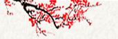

XXX算命结果示例
姓名：未填写 性别：男 公历出生时间：2011年01月10日19时35分 农历出生时间：二零一零年 十二月 初七日 戌时 当月节气：小寒:06日00:50 中气：大寒:20日18:07 十神： 官 财 日 伤 乾造： 庚 己 乙 丙 寅 丑 丑 戌 ——》年空：午未 日空：戌亥 藏干：丙甲戊 辛己癸 辛己癸 丁戊辛 藏神：伤劫才 杀财枭 杀财枭 食才杀 旺衰： 帝 衰 衰 墓 纳音：松柏木 霹雳火 海中金 屋上土 命主从8岁2个月24天开始行大运，于每一交运年的三月初一日交运。 大运： 十神： 官 杀 印 枭 劫 比 伤 食 年龄： 09 19 29 39 49 59 69 79 干支： 庚 辛 壬 癸 甲 乙 丙 丁 寅 卯 辰 巳 午 未 申 酉 旺衰： 帝 临 冠 沐 长 养 胎 绝 始于：2019 2029 2039 2049 2059 2069 2079 2089 流年： 己亥 己酉 己未 己巳 己卯 己丑 己亥 己酉 庚子 庚戌 庚申 庚午 庚辰 庚寅 庚子 庚戌 辛丑 辛亥 辛酉 辛未 辛巳 辛卯 辛丑 辛亥 壬寅 壬子 壬戌 壬申 壬午 壬辰 壬寅 壬子 癸卯 癸丑 癸亥 癸酉 癸未 癸巳 癸卯 癸丑 甲辰 甲寅 甲子 甲戌 甲申 甲午 甲辰 甲寅 乙巳 乙卯 乙丑 乙亥 乙酉 乙未 乙巳 乙卯 丙午 丙辰 丙寅 丙子 丙戌 丙申 丙午 丙辰 丁未 丁巳 丁卯 丁丑 丁亥 丁酉 丁未 丁巳 戊申 戊午 戊辰 戊寅 戊子 戊戌 戊申 戊午 止于：2028 2038 2048 2058 2068 2078 2088 2098 命主：2075年65岁时岁运并临。 四柱神煞： 年柱：天德 月德 天乙 太极 羊刃 劫煞 月柱：华盖 日柱：华盖 时柱：华盖 空亡 大运神煞： 庚寅：天乙 太极 天德 月德 羊刃 辛卯：禄 咸池 丧门 壬辰：国印 丧门 癸巳：金舆 甲午：天乙 太极 文昌 将星 空亡 咸池 乙未：天喜 空亡 丙申：天乙 驿马 丁酉：将星 元辰 胎元：庚辰(白蜡金) 命宫：壬午(杨柳木)) 胎元神煞：天德 月德 命宫神煞：天乙 太极 文昌 将星 空亡 咸池 八字五行个数（本气）： 1个金，2个木，0个水，1个火，4个土 八字五行个数（含余气）： 4个金，2个木，2个水，3个火，5个土 八字五行得分： 木：16 水：8 同类得分：24 金：18 火：16 土：47 异类得分：81 相差：-57 综合旺衰得分：-53八字过弱 日干不得令. 日干于年支逢羊刃, 为得地. 命局分析：本命属虎，松柏木命。偏财格。 乙日干生丑月，处衰地，不得令，财临旺地，土冻木寒。天干偏财透出，虽在丑月不得令，但地支有强根，冬土喜火。天干正官透出，在丑月不得令，且地支无强根，正官无力。天干伤官透出，在丑月不得令，且地支无强根，伤官无力。地支寅木劫财，日主得强根，羊刃旺而帮身有力。 八字过弱，以印比为喜用。 《穷通宝鉴》调侯用神参考： 乙木生于丑月(丙)：寒谷回春，专用丙火。 丙火透出，富贵之命。 常用神煞： 天乙：寅午子申 驿马：申亥 华盖：戌丑 将星：午酉 金舆：巳 天德：庚 禄神：卯 羊刃：寅 劫煞：亥寅 灾煞：子卯 咸池：卯午 月德：庚 刑冲合害：寅 丑 丑 戌 三刑： 巳申 戌未 戌未 丑未 三合： 午戌 巳酉 巳酉 寅午 六合： 亥 子 子 卯 相害： 巳 午 午 酉 相冲： 申 未 未 辰 命带持势之刑，持势猛进，易遭挫折，易成易败，健康不良，夫妻易产生隔阂。如三刑全则出身不佳。 <----------------------------------------性格简评----------------------------------------> 性格简评：（事常知足心常乐，人到无求品自高） 1、华盖逢空，喜欢离群索居，孤独自得。 2、正官为忌神，有骄傲刚愎的现象但临事又优柔寡断，或缺乏责任感，法纪观念淡薄。 3、伤官为忌神，常会对自己作过高评价，而有蔑视他人的趋势，任性而为，一意孤行，不愿受世俗礼法的拘束，而且兴趣太杂，博而不精，并且其人多放荡不羁，多傲气，很容易被人认为是一个狂傲乖张的人，且喜欢好管闲事而弄巧成拙。 4、偏财为忌神，其人是实用型范畴，受环境因素影响，喜欢听取表扬、表张、夸奖、乃至于奉承之类的话题，自己对事物的分析、推测、估价、评论见解非凡，但是，常常也有言过其实的地方或者时候。 5、财多身弱，想像力丰富，实践力不足。为人慷慨喜交际，注重生活享受，虚荣心强，对物质喜新厌旧。意志力不强，易受人左右。（重点） 6、食伤生财，头脑聪明灵活，精巧能干，会做生意。长袖善舞。但因欲望强，不易满足，故而每天忙碌，追求实利。个性开朗，富正义感，豪爽好施，故人缘佳，异性缘亦佳。 7、日干为乙木，性格柔顺，喜行善事，有利人益我之仁心，且有同情心，性情和蔼，善与人结交朋友，外表谦虚，但内心占有欲望强烈。 8、日干为木，八字土多，不切实际，承诺常常落空，过于自信且有些自负，对于钱财、物质、感情很执着，对人虽有好意，但事后常有疑心他人之毛病。(重点) 9、伤官心性。优点：领悟力强，理想高远，追求完美生活。有独裁倔强个性。自信甚强，斗志昂扬，学习能力强，易成英雄人物。伤官在命，若非多学多能，就是相貌清秀。在自由事业，精密技术、演艺事业方面，易获特殊成功，也可站在台前或从事口才之事业。缺点：领悟力与兴趣广泛，博而不精。易恃才而骄，不喜世俗礼法拘束，行为易致任性乖张。为达目的，甚或以私害公，伤人而不自知。如原局再财多，则会贪得无厌。好管闲事，易招人误会。男宜克制私欲，以免违反伦理法律，女宜注意修德，以防影响婚嫁。 10、偏财心性。优点：精力充沛，性情急躁，待人慷慨豪爽。精明干练，善于掌握机会赚钱。擅交际，处事圆滑机智，举止轩昂，言行有威，一生多机缘巧遇，常有意外收获，乐观不怕挫折。缺点：豪爽慷慨，不大重视金钱，易致奢移浪费。不喜静坐家中，喜外出工作。喜钻营，擅交际，圆滑，多情，男性则女人缘多，易影响家庭婚姻生活，金钱与女人运得失均大，常有意外开销。 11、体质纤巧、柔嫩、顺和、灵透、能忍让，多愁善感、不果断。 诗诀：月中仙子娇人宠，悬河午门翰苑名。坐守金殿得奇功，最怕西佛击钟声。 行酉运，防伤残；甲运，钱财不聚，多变动；午运，诗书成名；戊、己运，富比陶朱；庚、申运，官至侍郎；丙、丁运，艺海生涯。 12、离祖劳心，辛苦，固执，好斗，有暗疾，喜云游，慕僧侣。 诗诀：丽日秋爽杀气高，干戈影里逞英豪。羊失西南马奔北，塞上将军弃宝刀。 <----------------------------------------感情婚姻----------------------------------------> 情感婚姻：（天下没有后悔药，独有此处后悔多） 1、男命财星旺，女性缘佳，但难得女性之助益，相反还会因妻或女性而破财、惹祸。 2、财星离日干近，与异性关系密切，影响较大，缘分也深。 3、正财和偏财同时出现在命局中，异性缘很旺，但感情较复杂。 4、偏财旺或贴近日主，属于风流、慷慨、多情，较潇洒，有情有义之人。 5、偏财遇伤官，为人多情，异性缘佳，应当妥善处理与异性关系，防患于未然。 6、男命日支为忌神，妻子素质赶不上本人。 7、日干克日支，较有大男子主义。 8、财神有生扶，妻子健康长寿。 9、男命日支偏财为忌时，妻子奢侈浪费，马虎随便，漫不经心，无责任心。有时有拈轻怕重的倾向。 10、财星不遭冲克，妻寿长，有的专家认为：财星不遭冲克，暗示财路长，漫悠悠。 11、天干皆透印，命局无财，婚姻难得美满。不宜早婚，恐防事业因妻有碍。 12、命宫坐桃花，风流之人。 13、伤官见官，易有外遇。 14、时柱同现妻子二星，或时支中同藏妻星，有喜上加喜之事。 15、年干与日干或时干相合，妻易有意外破财之事。 16、男命财星在年月柱，易早婚或适婚。 17、男命日支坐财，易早婚或适婚。 18、男命财落空亡，适宜晚婚，夫妻感情易变，否则于事业家庭有阻碍。 19、日支受刑，适宜晚婚，否则于事业家庭有阻碍。 20、日干支相战，婚姻不顺。 21、日支带华盖，主配偶聪明有才艺，思想独特且喜研究哲学宗教，有出世之念且有孤芳自赏的心态。 22、日支为辰戌丑未者，主妻相貌敦厚。 23、日支土旺，配偶稳重，或诚实憨厚而不是傻瓜，可能个子不高。 24、日支为丑，配偶脸方，敦实。 25、日支偏财，表示除了妻子以外还会交其他女朋友，并且爱女友胜过妻子。 26、伤官生财，外表俊秀，有意外所得，青春期有望红烛之喜。 注：婚姻感情方面不顺，易因此陡增烦恼。其不顺内容包括：晚婚、多恋不成、婚后不睦、分居、外遇、离婚、婚后一方多病等，应此则不应彼。 由年命看，您的最佳婚配是：己亥(2019) 由年命看，您极为不利的婚配是：丙申(2016) 及属蛇的。 您的配偶所在的方向(以您原籍住址为中心点)：东北方对西南方。 有诗为证： 白虎黑猪上等婚，男女相合好成亲；钱财丰富百事顺，人口兴旺有精神。 虎蛇相配如刀锉，男女不合无着落；有儿有女也悲伤，纵是夫妻不快活。 <----------------------------------------兄弟姐妹----------------------------------------> 兄弟姐妹：（假成真时真亦假，无为有处有还无） 1、月支为忌神，难得亲荫，兄弟也不和睦。异地居住可和解。 2、比劫临贵人，兄弟姐妹富贵。 3、日主弱，四柱无印绶，只依赖比劫帮身，主不得母亲之力或不得上师赏识提拔而依靠手足或朋友之福以成家立业。 4、官星坐比劫，克兄弟。 5、日柱纳音克年柱纳音，无长兄或假老大。 6、财现月柱，兄弟姐妹富有。 7、日干弱，不见印星，只有比劫扶助日主，不得母亲之力，而得兄弟姐妹或朋友助力。 8、日主对月令逢衰、死、绝、胎、病者，兄弟缘薄，不得兄弟之助力。 <----------------------------------------子女情况----------------------------------------> 子女：(富贵难保子孙全，富贵难保子孙贤) 1、时伤官坐库，头胎易流产，生女好养，生男孩则多病或残疾。 2、时支空亡，子女要么福气大，要么无福。 3、时柱伤官为忌神，克子女，防子女有损伤。 4、财现时柱，子女富有，自己有晚福。 5、日时相刑，不利子女。 6、忌神集于时柱，晚年享受儿女之福较少。 7、阴日阳时先生女后生男。 8、时支坐死墓绝，不利子女。 9、遇正官流年易生儿子。 10、时柱落空亡，子女中至少有一位健康不良。 <----------------------------------------财运分析----------------------------------------> 财运：（世人都晓神仙好，惟有金银忘不了。终朝只恨聚无多，及到多时眼闭了） 1、偏财条件好，对现实事物善于安排、控制、管理、处理，这个会使得工作井然有序，有实质成果，容易赚钱。 2、柱中财多，不经商也掌钱财。 3、偏财透出，为人慷慨大方。 4、财透出，为人慷慨大方，仗义轻财。 5、财气通门户，无人不富（有食伤生财）。 6、财藏官库，富贵易得。 7、柱中甲丙庚寅申多或全，如不全，待行运或流年补齐，多会从事商业工作或经商。 8、财怕刑冲空亡，易破财，求财辛苦，财难聚。 9、财坐建禄，父妻发达。 10、财官相生，能在财界享有盛名，且表示幼年家境不甚丰裕，需至青年时期家中经济才有突破性好转，建立其社会地位。 11、柱中有偏财，一生中会有意外之财，有暴富的机会，会从偏业中获得财富，如股票、证券、奖券、彩票、房地产等。 12、月支偏财，善于理财，为人慷慨，重义轻财，豪放风流，金钱出入大，反难聚集。外出离乡，经营得利制富，财运好。柱中有正财，可掌握财权。 <----------------------------------------功名事业----------------------------------------> 功名事业及就业趋向：（心作良田百世耕有余，德为至宝一生用不尽） 1、财官相辅，宜学习政治，法律或财政。 2、食伤生财，宜学习和从事商务、金融、财政、贸易、或技术性商业。 3、身弱无助，最好不要独立经营。 4、五行需水，宜流动事业或外交职务。 5、日主过弱，宜学习农工百艺，养其一技之长。 6、金为正官，处理事情果断，义气，同时经济概念也很正确，适合与在财政、经济、金融、军队警察等行业工作的人员交流和交往，或者在这方面有收获。 7、比肩或劫财为喜用，适合经营共同事业，公司，同时可添设分支机构。也可自己赤手空拳创一番事业。 8、日支坐伤官或天干透伤官，适合从事技术，生产，学者的工作。 9、偏财遇伤官，且其力强于正财与食神，应选择刺激性，投机性，冒险性或具有挑战性的事业，如贸易，加工，业务，推销等。 10、四柱偏财强于正财者，若经商，宜从事产品加工，批发推销等。 11、四柱官杀印甚弱，食神偏财强于伤官正财，不宜从公，经商为上，最适合产品加工，推销，批发代理商等；还可从事出版业，文具店，书店，花店，艺术业等。 12、印被克或柱中无印，自己奋斗成功。 13、正印坐华盖，学业有成，加以官透，此人可能是行政官员。 工作中最有利的合作伙伴是：属鼠 属马 属猪 之人. <----------------------------------------健康状况----------------------------------------> 健康状况：（心平气和身自健，神宁无欲体永康） 1、土旺且多，木弱，听力差。 2、柱中有伤，必有伤灾。 3、木土相战，应预防脾胃之疾或皮肤病。 4、天干有庚或辛，同时又有丙或丁，应预防近视。 5、年柱纳音被日柱或时柱纳音所克，地支遭刑，易招致灾祸。 6、年柱纳音被日柱或时柱纳音所克，且年干被日干或时干所克，一生中必有大灾。终生来看，还会带有伤印或者疤痕。 7、伤官与官或杀在天干，易受外伤。 注：一阴一阳谓之道，偏阴偏阳谓之疾。五行平衡健安顺，如若偏枯有灾险。 流年不平现流月，大运不平灾流年。五脏兼对六亲位，不吊即孝也花钱。 <----------------------------------------祖业父母----------------------------------------> 祖业父母：（继先祖一脉真传 克勤克俭，教后人两行正路 唯读唯耕） 1、日主弱，用神为正印或比肩帮扶者，主得母亲或兄妹之宠爱。 2、日主弱，年坐羊刃，主得双亲祖荫，但对父母不免稍有刑克。 3、年上或月上遇贵人，双亲貌秀而文雅。 4、年临天月二德，父母心慈而祥，行善积德之人，出身德望之家。 5、柱中财多克母。 6、日柱纳音克命宫纳音，祖上和父母贫穷。 7、羊刃现年柱，不是祖上破败，就是多有刑伤，且其人有以怨报德的倾向。 8、偏财过多而身弱，为父亲拖累。 9、月干偏财主父掌家权。 10、财旺身弱，父母关系不好或父母中有人身体很不好，父掌家权，与父缘薄。 11、年干自坐绝、死、墓，或年支遭冲克，表示祖业虚花、衰败，祖父或祖母有一位寿不长。 12、忌神在年干，祖父先去世。 13、忌神集于月柱，不得父母助力。 14、月或时透偏财，与父不和。 15、偏财为忌神，但父母宫为喜用神，表明父亲自身条件好、品质好，但却不能帮助自己。 <----------------------------------------称骨算命----------------------------------------> 袁天罡称骨算命： 此命局为二两八钱： 宜出外改姓求生之命。 一生行事似飘蓬，祖宗产业大梦中， 若不过房并改姓，也当移徙二三通。 注解：此命为人多才能，心机灵巧，祖业飘零，离乡别井可成事业，兄弟多力，驳杂多端，为静处安然，出外有人敬重，可进四方之财，有贵人扶持，逢凶化吉，勤俭一生，无大难，只是救人无功，恩中招怨，重义轻才，易聚易散，早年不能聚财，三十三岁方知劳苦，凡事顺意，三十八九，四十岁称心如意，末限福如东海，寿比南山。只是妻宫有克，三子送终，寿元六十九，闯过八十一，死于三月中。 <----------------------------------------诗词论命----------------------------------------> 古诗词论命： 乙木根草种得深，只宜阳地不宜阴。 漂浮最怕多逢水，刻断何当苦用金。 南去火炎灾不浅，西行土重祸犹侵。 栋梁不是连根木，辨别工夫好用心。 隆冬建丑怯冰霜，谁识天时转二阳。 暖土诚能生万物，寒金难道只深藏。 刑冲未戌非无用，类聚鸡蛇信有方。 若在日时多水木，直须行入巽离乡。 乙生丑为偏财旺，喜行东南木巽宫； 虽说功名不登榜，富豪能比古石崇。 年上正官福德添，祖上有德功名全； 更喜独官居一位，后人必定早握权； 年上正官怕伤官，唯遇此运添麻烦； 中年交了正官运，再逢禄旺职高迁。 月上偏财众人抬，兄弟姐妹靠得来； 有宜守家喜出外，不学手艺做买卖； 月上偏财是外财，贵人手下能求财； 偏财临月也怕劫，财多婚姻自有灾。 日藏偏财无刑冲，妻子贤惠福禄生； 男女二命相刑克，中年伤妻苦伶仃； 二命相争多疾患，两命相克有灾星； 偏财受冲情缘薄，财逢天乙有名声。 时带伤官头胎女，男女均兆克子息； 晚年运气不如意，孤苦伶仃防人欺； 支上无财家必贫，支上逢劫财难聚； 伤官最畏把官见，火土伤官最为忌。 乙丑日生：慷慨大方，喜爱春风，多学少成，幼年现灾，父母重拜；九流中人，夫妻无刑，儿女不孤，六亲少靠；女人贤良纯和，但求财心切，需体恤家庭。 身坐金库财福秀，衣禄荣华样样有。金水相涵好文章，东方西方对面谈。 生于子月，丑合，贵。丑月，带疾；寅月，寅中丙火克庚金官星，不禄。申酉月，无火，寿长。寅卯月败财。辰戌月，富贵。亥子月，诗文扬。巳午月，福寿。戌月，清秀厚道，财富丰盈。 <-----------------------------------------日时断-----------------------------------------> 三命通会日时断： 乙丑日丙戌时生，生于春季，自身健旺，以吉命论。生于夏季，伤官太重，对自身不利。生于秋季，一生劳碌艰辛。冬季的亥子月，印绶带伤官，是大贵之命。生于戌月，行木火运，有七品官，戌戌年月生，天干透出庚丙的，命主大贵。年月支是寅午，形成火局，命主夭折。 <---------------------------------命宫、游年卦、小儿关煞---------------------------------> 命宫： 午宫天福命最强，荣华富贵在命上， 遇着大事能化小，遇着小事保安康； 处事为人心肠软，如同佛道好心肠。 天福星，荣华吉命。午宫，太阳之垣，生于此宫，其为人也，士农工商，无不咸宜。最利攻读政治，功业自然显著，倘格局不利，可能发生心脏病。午宫之人，天生具有高贵的，有野心和热望的特质。并且有坚强的意志，而且经常不顾险阻，有打通一切阻碍的勇气，但有时傲气很盛，而为企图速化，出人头地，则又不愿小屈以求大伸。平时待人和蔼可亲，也无非笼络手段，取悦他人，便利其本身之发展。假使戒除骄态，自有成功之一日。如逢岁运不佳，生理方面，可能影响腰部，发生脊骨疼痛，风湿，黄疸等症。 桃花位在卯。文昌位在西北。 游年卦： 东北伏位 东方六煞 东南绝命 南方祸害 西南生气 西方延年 西北天医 北方五鬼 马倒禄斜虚岁年龄：8、14、38、44、68 <----------------------------------------流年流月----------------------------------------> 流年流月： 一二三四五六七八九十冬腊 寅卯辰巳午未申酉戌亥子丑 2011(辛卯): 庚辛壬癸甲乙丙丁戊己庚辛 2012(壬辰): 壬癸甲乙丙丁戊己庚辛壬癸 2013(癸巳): 甲乙丙丁戊己庚辛壬癸甲乙 2014(甲午): 丙丁戊己庚辛壬癸甲乙丙丁 2015(乙未): 戊己庚辛壬癸甲乙丙丁戊己 2016(丙申): 庚辛壬癸甲乙丙丁戊己庚辛 2017(丁酉): 壬癸甲乙丙丁戊己庚辛壬癸 2018(戊戌): 甲乙丙丁戊己庚辛壬癸甲乙 2019(己亥): 丙丁戊己庚辛壬癸甲乙丙丁 2020(庚子): 戊己庚辛壬癸甲乙丙丁戊己 2021(辛丑): 庚辛壬癸甲乙丙丁戊己庚辛 2022(壬寅): 壬癸甲乙丙丁戊己庚辛壬癸 2023(癸卯): 甲乙丙丁戊己庚辛壬癸甲乙 2024(甲辰): 丙丁戊己庚辛壬癸甲乙丙丁 2025(乙巳): 戊己庚辛壬癸甲乙丙丁戊己 2026(丙午): 庚辛壬癸甲乙丙丁戊己庚辛 2027(丁未): 壬癸甲乙丙丁戊己庚辛壬癸 2028(戊申): 甲乙丙丁戊己庚辛壬癸甲乙 2029(己酉): 丙丁戊己庚辛壬癸甲乙丙丁 2030(庚戌): 戊己庚辛壬癸甲乙丙丁戊己 2031(辛亥): 庚辛壬癸甲乙丙丁戊己庚辛 2032(壬子): 壬癸甲乙丙丁戊己庚辛壬癸 2033(癸丑): 甲乙丙丁戊己庚辛壬癸甲乙 2034(甲寅): 丙丁戊己庚辛壬癸甲乙丙丁 2035(乙卯): 戊己庚辛壬癸甲乙丙丁戊己 2036(丙辰): 庚辛壬癸甲乙丙丁戊己庚辛 2037(丁巳): 壬癸甲乙丙丁戊己庚辛壬癸 2038(戊午): 甲乙丙丁戊己庚辛壬癸甲乙 2039(己未): 丙丁戊己庚辛壬癸甲乙丙丁 2040(庚申): 戊己庚辛壬癸甲乙丙丁戊己 2041(辛酉): 庚辛壬癸甲乙丙丁戊己庚辛 2042(壬戌): 壬癸甲乙丙丁戊己庚辛壬癸 2043(癸亥): 甲乙丙丁戊己庚辛壬癸甲乙 2044(甲子): 丙丁戊己庚辛壬癸甲乙丙丁 2045(乙丑): 戊己庚辛壬癸甲乙丙丁戊己 2046(丙寅): 庚辛壬癸甲乙丙丁戊己庚辛 2047(丁卯): 壬癸甲乙丙丁戊己庚辛壬癸 2048(戊辰): 甲乙丙丁戊己庚辛壬癸甲乙 2049(己巳): 丙丁戊己庚辛壬癸甲乙丙丁 2050(庚午): 戊己庚辛壬癸甲乙丙丁戊己 2051(辛未): 庚辛壬癸甲乙丙丁戊己庚辛 2052(壬申): 壬癸甲乙丙丁戊己庚辛壬癸 2053(癸酉): 甲乙丙丁戊己庚辛壬癸甲乙 2054(甲戌): 丙丁戊己庚辛壬癸甲乙丙丁 2055(乙亥): 戊己庚辛壬癸甲乙丙丁戊己 2056(丙子): 庚辛壬癸甲乙丙丁戊己庚辛 2057(丁丑): 壬癸甲乙丙丁戊己庚辛壬癸 2058(戊寅): 甲乙丙丁戊己庚辛壬癸甲乙 2059(己卯): 丙丁戊己庚辛壬癸甲乙丙丁 2060(庚辰): 戊己庚辛壬癸甲乙丙丁戊己 2061(辛巳): 庚辛壬癸甲乙丙丁戊己庚辛 2062(壬午): 壬癸甲乙丙丁戊己庚辛壬癸 2063(癸未): 甲乙丙丁戊己庚辛壬癸甲乙 2064(甲申): 丙丁戊己庚辛壬癸甲乙丙丁 2065(乙酉): 戊己庚辛壬癸甲乙丙丁戊己 2066(丙戌): 庚辛壬癸甲乙丙丁戊己庚辛 2067(丁亥): 壬癸甲乙丙丁戊己庚辛壬癸 2068(戊子): 甲乙丙丁戊己庚辛壬癸甲乙 2069(己丑): 丙丁戊己庚辛壬癸甲乙丙丁 2070(庚寅): 戊己庚辛壬癸甲乙丙丁戊己 2071(辛卯): 庚辛壬癸甲乙丙丁戊己庚辛 2072(壬辰): 壬癸甲乙丙丁戊己庚辛壬癸 2073(癸巳): 甲乙丙丁戊己庚辛壬癸甲乙 2074(甲午): 丙丁戊己庚辛壬癸甲乙丙丁 2075(乙未): 戊己庚辛壬癸甲乙丙丁戊己 2076(丙申): 庚辛壬癸甲乙丙丁戊己庚辛 2077(丁酉): 壬癸甲乙丙丁戊己庚辛壬癸 2078(戊戌): 甲乙丙丁戊己庚辛壬癸甲乙 2079(己亥): 丙丁戊己庚辛壬癸甲乙丙丁 2080(庚子): 戊己庚辛壬癸甲乙丙丁戊己 2081(辛丑): 庚辛壬癸甲乙丙丁戊己庚辛 2082(壬寅): 壬癸甲乙丙丁戊己庚辛壬癸 2083(癸卯): 甲乙丙丁戊己庚辛壬癸甲乙 2084(甲辰): 丙丁戊己庚辛壬癸甲乙丙丁 2085(乙巳): 戊己庚辛壬癸甲乙丙丁戊己 2086(丙午): 庚辛壬癸甲乙丙丁戊己庚辛 2087(丁未): 壬癸甲乙丙丁戊己庚辛壬癸 2088(戊申): 甲乙丙丁戊己庚辛壬癸甲乙 2089(己酉): 丙丁戊己庚辛壬癸甲乙丙丁 2090(庚戌): 戊己庚辛壬癸甲乙丙丁戊己 2091(辛亥): 庚辛壬癸甲乙丙丁戊己庚辛 2092(壬子): 壬癸甲乙丙丁戊己庚辛壬癸 2093(癸丑): 甲乙丙丁戊己庚辛壬癸甲乙 2094(甲寅): 丙丁戊己庚辛壬癸甲乙丙丁 <----------------------------------------流年变化----------------------------------------> 流年变化： 2010(庚寅):命局与流年争合日主。 2012(壬辰):流年与时柱天克地冲。 2015(乙未):流年与日柱天比地冲。 2015(乙未):流年与月柱天克地冲。 2015(乙未):流年与大运天克地冲。 2015(乙未):流年与大运相冲。 2016(丙申):流年与年柱天克地冲。 2016(丙申):流年冲克羊刃。 2016(丙申):柱中伤官见官。 2016(丙申):流年冲克年支。 2019(己亥):流年遇披麻吊客。 2020(庚子):命局与流年争合日主。 2020(庚子):柱中伤官见官。 2020(庚子):流年遇天乙贵人。 2021(辛丑):大运、流年、命局组成一支刑三支。 2022(壬寅):流年遇天乙贵人。 2026(丙午):柱中伤官见官。 2027(丁未):年干被流年天干所克，年支入墓于流年支。 2028(戊申):流年冲克羊刃。 2028(戊申):流年冲克年支。 2028(戊申):流年与大运相冲。 2028(戊申):运支为羊刃，流年冲之。 2028(戊申):年支为喜神，遇流年相冲。 2029(己酉):流年与大运相冲。 2030(庚戌):流年遇月德。 2030(庚戌):命局与流年争合日主。 2030(庚戌):柱中伤官见官。 2031(辛亥):流年遇披麻吊客。 2032(壬子):流年遇天乙贵人。 2032(壬子):流年喜用神到位。 2032(壬子):流年合财。 2033(癸丑):流年遇红鸾。 2033(癸丑):大运、流年、命局组成一支刑三支。 2034(甲寅):流年遇天乙贵人。 2034(甲寅):流年喜用神到位。 2034(甲寅):流年合财。 2035(乙卯):流年遇桃花。 2035(乙卯):流年是日主禄地。 2035(乙卯):流年喜用神到位。 2035(乙卯):流年合财。 2036(丙辰):流年与时柱天比地冲。 2036(丙辰):柱中伤官见官。 2038(戊午):流年遇桃花。 2039(己未):流年与月柱天比地冲。 2039(己未):此年开始之大运与时柱天克地冲。 2039(己未):流年与日柱天克地冲。 2040(庚申):流年遇月德。 2040(庚申):流年与年柱天比地冲。 2040(庚申):流年冲克羊刃。 2040(庚申):命局与流年争合日主。 2040(庚申):柱中伤官见官。 2040(庚申):流年冲克年支。 2042(壬戌):流年与大运天比地冲。 2042(壬戌):命局喜印，与流年形成伤官佩印。 2043(癸亥):流年遇披麻吊客。 2043(癸亥):流年喜用神到位。 2044(甲子):流年和月柱天合地合。 2044(甲子):流年遇天乙贵人。 2044(甲子):流年喜用神到位。 2044(甲子):流年合财。 2044(甲子):流年合财。 2045(乙丑):流年遇红鸾。 2045(乙丑):与日柱伏吟。 2045(乙丑):大运、流年、命局组成一支刑三支。 2046(丙寅):柱中伤官见官。 2046(丙寅):流年遇天乙贵人。 2046(丙寅):命局喜印，与流年形成伤官佩印。 2047(丁卯):流年遇桃花。 2047(丁卯):流年是日主禄地。 2047(丁卯):流年合财。 2048(戊辰):大运流年支冲克时支。 2050(庚午):流年遇月德。 2050(庚午):命局与流年争合日主。 2050(庚午):柱中伤官见官。 2050(庚午):流年遇桃花。 2051(辛未):流年与日柱天克地冲。 2052(壬申):大运、流年与命局相刑。 2052(壬申):流年冲克羊刃。 2052(壬申):命局喜印，与流年形成伤官佩印。 2052(壬申):流年冲克年支。 2054(甲戌):流年合财。 2055(乙亥):流年遇披麻吊客。 2055(乙亥):流年与大运相冲。 2055(乙亥):流年喜用神到位。 2056(丙子):柱中伤官见官。 2056(丙子):流年遇天乙贵人。 2056(丙子):流年合财。 2057(丁丑):流年遇红鸾。 2057(丁丑):大运、流年、命局组成一支刑三支。 2058(戊寅):流年遇天乙贵人。 2059(己卯):流年遇桃花。 2059(己卯):流年是日主禄地。 2059(己卯):流年合财。 2060(庚辰):流年遇月德。 2060(庚辰):流年与时柱天克地冲。 2060(庚辰):命局与流年争合日主。 2060(庚辰):柱中伤官见官。 2062(壬午):流年遇桃花。 2062(壬午):命局喜印，与流年形成伤官佩印。 2063(癸未):流年与月柱天克地冲。 2064(甲申):流年与年柱天克地冲。 2064(甲申):流年冲克羊刃。 2064(甲申):流年冲克年支。 2064(甲申):流年合财。 2066(丙戌):柱中伤官见官。 2067(丁亥):流年遇披麻吊客。 2068(戊子):流年与大运天克地冲。 2068(戊子):流年遇天乙贵人。 2068(戊子):流年与大运相冲。 2068(戊子):流年合财。 2069(己丑):大运、流年与命局相刑。 2069(己丑):此年开始之大运与月柱天克地冲。 2069(己丑):流年与大运天克地冲。 2069(己丑):流年遇红鸾。 2069(己丑):与月柱伏吟。 2069(己丑):流年与大运相冲。 2069(己丑):大运、流年、命局组成一支刑三支。 2070(庚寅):命局与流年争合日主。 2070(庚寅):柱中伤官见官。 2070(庚寅):流年遇天乙贵人。 2071(辛卯):流年遇桃花。 2071(辛卯):流年合财。 2072(壬辰):流年与时柱天克地冲。 2072(壬辰):命局喜印，与流年形成伤官佩印。 2074(甲午):流年遇桃花。 2074(甲午):流年合财。 2075(乙未):流年与日柱天比地冲。 2075(乙未):流年与月柱天克地冲。 2075(乙未):岁运并临。 2076(丙申):流年与年柱天克地冲。 2076(丙申):流年冲克羊刃。 2076(丙申):柱中伤官见官。 2076(丙申):流年冲克年支。 2078(戊戌):大运、流年与命局相刑。 2079(己亥):此年开始之大运与年柱天克地冲。 2079(己亥):流年遇披麻吊客。 2080(庚子):命局与流年争合日主。 2080(庚子):柱中伤官见官。 2080(庚子):流年合财。 2081(辛丑):大运、流年、命局组成一支刑三支。 2082(壬寅):流年冲大运马星。 2082(壬寅):流年与大运天克地冲。 2082(壬寅):流年与大运相冲。 2083(癸卯):流年合财。 2084(甲辰):流年合财。 2085(乙巳):大运、流年与命局相刑。 2086(丙午):柱中伤官见官。 2088(戊申):流年冲克羊刃。 2088(戊申):流年冲克年支。 2088(戊申):大运流年支冲克年支。 <----------------------------------------终 身 卦----------------------------------------> 终身卦（以年支数起）： 水天需(水金, 坤宫) 上坎下乾 3爻动 变卦 水泽节(水金, 坎宫) 妻财子水、、 妻财子水、、 玄武 兄弟戌土、 兄弟戌土、 白虎 子孙申金、、世 子孙申金、、应 螣蛇 兄弟辰土、 兄弟丑土、、 勾陈 官鬼寅木、 官鬼卯木、 朱雀 妻财子水、 应 父母巳火、 世 青龙 终身卦（以年干数起）： 泽风大过(金木, 震宫) 上兑下巽 1爻动 变卦 泽天夬(金金, 坤宫) 妻财未土、、 妻财未土、、 玄武 官鬼酉金、 官鬼酉金、 世 白虎 父母亥水、 世 父母亥水、 螣蛇 官鬼酉金、 妻财辰土、 勾陈 父母亥水、 兄弟寅木、 应 朱雀 妻财丑土、、应 父母子水、 青龙 <----------------------------------------流年神煞----------------------------------------> 流年神煞： 2010(庚寅): 天乙 太极 天德 月德 羊刃 2011(辛卯): 禄 咸池 丧门 2012(壬辰): 国印 丧门 2013(癸巳): 金舆 2014(甲午): 天乙 太极 文昌 将星 空亡 咸池 2015(乙未): 天喜 空亡 2016(丙申): 天乙 驿马 2017(丁酉): 将星 元辰 2018(戊戌): 华盖 空亡 披麻 2019(己亥 交 庚寅 大运): 太极 文昌 国印 驿马 空亡 吊客 披麻 2020(庚子): 天乙 太极 天德 月德 吊客 2021(辛丑): 华盖 红鸾 2022(壬寅): 天乙 太极 羊刃 2023(癸卯): 禄 咸池 丧门 2024(甲辰): 国印 丧门 2025(乙巳): 金舆 2026(丙午): 天乙 太极 文昌 将星 空亡 咸池 2027(丁未): 天喜 空亡 2028(戊申): 天乙 驿马 2029(己酉 交 辛卯 大运): 将星 元辰 2030(庚戌): 天德 月德 华盖 空亡 披麻 2031(辛亥): 太极 文昌 国印 驿马 空亡 吊客 披麻 2032(壬子): 天乙 太极 吊客 2033(癸丑): 华盖 红鸾 2034(甲寅): 天乙 太极 羊刃 2035(乙卯): 禄 咸池 丧门 2036(丙辰): 国印 丧门 2037(丁巳): 金舆 2038(戊午): 天乙 太极 文昌 将星 空亡 咸池 2039(己未 交 壬辰 大运): 天喜 空亡 2040(庚申): 天乙 天德 月德 驿马 2041(辛酉): 将星 元辰 2042(壬戌): 华盖 空亡 披麻 2043(癸亥): 太极 文昌 国印 驿马 空亡 吊客 披麻 2044(甲子): 天乙 太极 吊客 2045(乙丑): 华盖 红鸾 2046(丙寅): 天乙 太极 羊刃 2047(丁卯): 禄 咸池 丧门 2048(戊辰): 国印 丧门 2049(己巳 交 癸巳 大运): 金舆 2050(庚午): 天乙 太极 天德 月德 文昌 将星 空亡 咸池 2051(辛未): 天喜 空亡 2052(壬申): 天乙 驿马 2053(癸酉): 将星 元辰 2054(甲戌): 华盖 空亡 披麻 2055(乙亥): 太极 文昌 国印 驿马 空亡 吊客 披麻 2056(丙子): 天乙 太极 吊客 2057(丁丑): 华盖 红鸾 2058(戊寅): 天乙 太极 羊刃 2059(己卯 交 甲午 大运): 禄 咸池 丧门 2060(庚辰): 天德 月德 国印 丧门 2061(辛巳): 金舆 2062(壬午): 天乙 太极 文昌 将星 空亡 咸池 2063(癸未): 天喜 空亡 2064(甲申): 天乙 驿马 2065(乙酉): 将星 元辰 2066(丙戌): 华盖 空亡 披麻 2067(丁亥): 太极 文昌 国印 驿马 空亡 吊客 披麻 2068(戊子): 天乙 太极 吊客 2069(己丑 交 乙未 大运): 华盖 红鸾 2070(庚寅): 天乙 太极 天德 月德 羊刃 2071(辛卯): 禄 咸池 丧门 2072(壬辰): 国印 丧门 2073(癸巳): 金舆 2074(甲午): 天乙 太极 文昌 将星 空亡 咸池 2075(乙未): 天喜 空亡 2076(丙申): 天乙 驿马 2077(丁酉): 将星 元辰 2078(戊戌): 华盖 空亡 披麻 2079(己亥 交 丙申 大运): 太极 文昌 国印 驿马 空亡 吊客 披麻 2080(庚子): 天乙 太极 天德 月德 吊客 2081(辛丑): 华盖 红鸾 2082(壬寅): 天乙 太极 羊刃 2083(癸卯): 禄 咸池 丧门 2084(甲辰): 国印 丧门 2085(乙巳): 金舆 2086(丙午): 天乙 太极 文昌 将星 空亡 咸池 2087(丁未): 天喜 空亡 2088(戊申): 天乙 驿马 2089(己酉 交 丁酉 大运): 将星 元辰 2090(庚戌): 天德 月德 华盖 空亡 披麻 2091(辛亥): 太极 文昌 国印 驿马 空亡 吊客 披麻 2092(壬子): 天乙 太极 吊客 2093(癸丑): 华盖 红鸾 2094(甲寅): 天乙 太极 羊刃 2095(乙卯): 禄 咸池 丧门 2096(丙辰): 国印 丧门 2097(丁巳): 金舆 2098(戊午): 天乙 太极 文昌 将星 空亡 咸池 2099(己未 交 戊戌 大运): 天喜 空亡 <----------------------------------------重大关口----------------------------------------> 一生重大关口： 2015(乙未) 2016(丙申) 2027(丁未) 2039(己未) 2044(甲子) 2048(戊辰) 2051(辛未) 2060(庚辰) 2063(癸未) 2064(甲申) 2068(戊子) 2072(壬辰) 2075(乙未) 2082(壬寅) 以上列出来的年份，命主或亲人一般有重大变化，也许是喜事，也许有凶灾。在这些年份最好多去寺院进香，祈福禳灾，多放生、做一些慈善事情等。以减灾增福！ <---------------------------------------鬼谷子论命---------------------------------------> 鬼谷子论命： 革卦 丙戌时：天乙星－落花戒霜－暮年事宜谨慎。 判断 此宿主人命，清高近贵，性直心慈。不会苟求，拙于俯仰，五行坚固，四柱安和。情如野鹤栖松，性似寒潭印月。如行好事，可保永年。 革故鼎新格 弃旧从新命始亨，利名却有两三重，雁飞云外程程远，花落溪边片片红。 世事莫嫌无用处，仓箱终是有从容，龙头虎尾天书降，重整青毡锦绣中。 基业 孤松枝上鹤声鸣，奋志翱翔入紫云，白玉黄金非是贵，猩猩伶俐喜为文。 兄弟 鸣鸿三只入秋霞，枫叶飘飘逐暮鸦，素叹凋零梅蕊少，数声姜笛到仙家。 行藏 玉帛金珠满目前，绿窗朱户隐神仙，门庭改换方为妙，积德修身感上天。 婚姻 簾笼深锁白云间，燕语呢喃过远山，流水落花人寂寞，后园蜂蝶喜回环。 子息 移金换玉调瑶琴，柳叶桃根岁月深，墙外高枝花正发，晚来松桂始森森。 收成 龙犬年间风雨多，仙桥已架欲如何，西山风雨真凄楚，鹤泪猿啼听牧歌。 (以上鬼谷子论命部分因年代久远，仅供参考。) <---------------------------------------一掌经论命---------------------------------------> 一掌经论命： 年： 天权星：月日时上遇天权，聪明正直志不凡。文武相宜受人敬，正人见喜小人嫌。再与福寿文贵并，名誉地位保双全。若逢孤破兼厄驿，操劳奔波不消闲。 年入天权，少年奔走，公平仗义，聪明俊秀。若勤学问，管禄之人。广交朋友，权在四方。贵格虽好，困厄必防。 月： 天厄星：天厄凶星运势低，劳碌生涯始见奇。此命带疾方延寿，白手起家靠自立。再有权福相辅助，福禄双至定无疑。时厄再兼孤与破，伤残相伴老无依。 月入天厄，凶多吉少，性多固执，亲人无靠。世业如云，自立生涯。若无身厄，琴宫不和。带疾延年，可免凶厄。 日： 天驿星：天驿流年犯此星，命宜离祖得安宁。经营游遍天下路，难免到时一场空。若逢权福方为吉，福刃相交百事通。若带孤破加天厄，克害六亲苦伶仃。 日入天驿，出入频频，驿马到门，经商有利。出外快活，在家有困。贪占过欲，反而失意。夫妻有散，后必重聚。 时： 天文星：时值天文灵性高，文章俊秀名声超。聪明伶俐讲信义，待人真诚有礼貌。若逢刃艺能文武，遇着破奸皆不妙。多学少成犯孤刃，福寿权会俸禄高。 时入天文，斯文之人，出入聚财，衣食富足。博学多识，人人夸好。平生所忌，火上有厄。若非官禄，妻儿双克。 <--------------------------------------前世数字命运--------------------------------------> 数字命运： 您的命运数字是6：前世是市民 前世身分悬殊的恋情，带给你悲惨的人生，过着平民般的生活。你的身分虽然很低微，但是藉由不断地努力而终於成功，而身分高贵的贵族可能会对你一见钟情，你们彼此深爱，但身分悬殊，还是无法缔结良缘。最后无法忘记对方，每天都过着悲伤的日子。因此在现世请不要太执着，自在的活下去比较重要。 命运数字是6的有：蔡依林、锦雯、金喜善、张本瑜，前世是市民，过於执着。 注：数字命运来源于互连网上流行的算命游戏。 <----------------------------------------日干论命----------------------------------------> 日干论命： 性格： 乙同属木性，与木之兄的阳相对，有木之弟的阴性气质。木所具有温和、安静特性较常在乙身上出现。 乙源自轧，意指互相倾轧或互相摩擦，春季时，万物会自皮中挣出逐渐成长。 若以天文现象而言，甲是一闪而过的雷电，而乙则是吹拂树尖的风。性格上而言，甲是树木，而乙则是攀沿树木的葛藤。也就是说甲会直往上伸展，而乙则是柔软、弯曲身体的蜿蜒而上。 由于乙的性格温和，因此多半不是自我主张过强的人，就算问题发生时，也多采取静观事变的态度，进而寻求合理的解决方法。但因过于重视人和，往往成了好好先生，易受四周所影响。 乙丑日出生的人的运势就像森林中照不到阳光的树木，喜好保守的生存方式，能忠实的固守既有的事物，不喜开创新工作。 恋爱： 这种类型的男性太过温柔，就连向对方传达自己的感情时，也不采取直接的手段，反而拼命的思考不着痕迹的方法，有道是皇帝不急太监急，他的周围友人都替他焦虑不安，希望他能勇敢地表白。 由于欠缺决断力，常会担心自己的举动可能造成对方的麻烦，因此就算赠送礼物给心爱的对象，事后被问起时多半会佯装不知。 如此一来，女性可能会认为乙日男性不可靠，然而就是这种不可靠反倒成了他们谈恋爱的最大武器，因为它往往强烈的刺激了女性的母体本能，认为惟有她的帮助，他才能成器。 人们常说[女人心海底针]有的女性憧憬具有决断力，力量强劲的男性，但也有些女性却喜欢保护无依无靠的男性，这种复杂的心态正成了乙日生男性的养分。 职业： 乙具有木的温柔、敦厚，不论任何行业都能柔软的适应。不过，最好从事协助性的工作，如科长不在时，代理科长辅佐科务，要比当科长领导部属来得胜任。甲给人的印象是可依靠的高树，而乙则是温和柔弱的小草木，因此乙的人很重情趣，多从事绘画、音乐等艺术工作，如果成为教师也多教导情趣方面的知识。 从木性的观点来看，甲适合使用木材原料的行业，而乙则适合木材加工业，如纸浆业、制纸业、纸商，或加工植物纤维而成的衣料制造，贩卖业。五谷杂粮、花卉、青果、果实等流通、贩卖也在此范围内。纸制品关系可扩大来考虑，如文具或画籍、杂志的出版、印刷业等都很好。 丙年的人最能表现乙的典型本性，由于他会倾尽自己的温柔，为世人谋福利，所以很适合慈善事业，宗教或教育界，这种性格若进入企业界，也多半从事促进人类健康、福利的工作。 财运： 乙日生的人表面上虽有[开口谈钱太俗气]的气概，但内心却有惜金的一面。由于生性使然，对于别人的要求很难断然拒绝，事后却又懊悔不已，不论借人大钱、小钱都有这种倾向。 庚年生的人在经济能力上颇能和社会相符合，但因过于好面子，交际费用一掷千金，往往有入不敷出的窘状。 健康： 乙日生的人天生就是弱体质，但是就如难折断的柳枝般，身体一旦遇上不良的状况时，会知道临机应变，不会过于勉强自己。因此，大病的危险反而出人意外的少，即使生病，自己也很有一套应付它，所以不会突然恶化。肝脏和喉咙易出毛病，扁桃腺炎也是一项弱点。 <--------------------------------------年月日时论命--------------------------------------> 年月日时论命： 庚寅年：庚金寅木，生人乃为森林出山之虎。泼雪凑霜，参天覆盖，风撼笙篁之秦，雨余旌旗之张，故曰：松柏木，松柏干枝喜秋冬、二季。冲破禄马吉神，为人一生性格威仪，志气浩大，做事和平，外刚内柔，春生衣禄丰厚，夏生衣禄平平，秋生财帛丰足，冬生福寿康宁。日生财谷有余，夜生中平。六月生人八败。男忌：四、十月，女忌：三、七月。 庚寅生人，为人心性急燥，有口无心，有事不藏，易好易恶，反复无情，衣食丰足，财物早年耗散不聚，晚景荣华，女主操持，旺相之命，身带禄米三升五合，糯米三升，棉布一件，绢一段，肉六两，茶盐六两，欠受生钱七万贯，午时空亡。 庚寅年的人个性开朗，行动敏捷，在人群中极受欢迎。但心情散漫、情绪多变，不管什么事都容易失败，脾气也极为暴躁。如能抑制缺点，对人亲切和蔼，将会成为老成持重、品德高尚的掌权人。晚年家运兴旺发达。 十二月出生的人，三月受胎，小寒节后出生，为人心直口快，兄弟缘小，百事劳苦，千斤重担一身担。初限有暗疾 侵身，中运衣禄自然来，四方财可得，女命能旺夫，但须小心病痛及小灾。凡事若成功还防失败，宜多祈神保平安，虽有衣禄，但一生坎坷较多，乃水流无定之命。 十二月为建丑月，在易经的卜卦上是配合地泽临的月份。这月出生的人很任性，性情不稳定，时常我行我素。若能耐心矫正缺点，谋求上进，虽然，中年期会遭遇到很多艰难，但是，晚年却能意外获得好运，度过让人羡慕的余生。 诗曰： 腊月生人不受贫，初年必定显英名。 白手成家自立业，猛勇刚强不让人。 初限勤劳受苦辛，自然未后不求人。 好运伴随福禄至，夫妇团圆过百春。 初限勤劳受苦辛，自成自立不求人， 心直口快难藏毒，骨肉团圆过几春。 十二月生人，百事劳苦，心直口快，亦主暗疾，父母兄弟妻子衣禄自然，得四方之财半吉之命也。 初七日，此日生人，性格活泼，厌静易动，沉浮起伏，波澜不定，初限平平，二五方开泰运，佳命渐至，家庭美满，兄弟如意，若是女命主富贵福禄。 戌时生人：（晚上七时至九时）地母星入命，河魁原本位，象应类金星，为人富有胆力，忠心尽职，重义气，讲信用，独行奋斗，福禄有进，歌乐一生，女人虚华，性情暴躁，无忍耐性，偏重情感，不重金钱，福禄中平，戌时主权威，公明得安然，平生衣禄有，好运积钱财，努力上进，可掌权柄之命。 适业：军人、保镖、诗人、作家、投机、五金、农林、机械等，火土事业吉，忌木类 吉凶年：十六、二十六、三十五、四十四、四十九、五十七、七十八岁 戌时初生人：时初生人先克母，为人性急心慈善，手足难靠六亲平，三八发财有权柄。忠厚朴实，随机应变不足，手足不得力，作事有权柄，六亲平常，夫妻口角，子息迟少，初年辛苦。三十七岁后，财禄自好，生涯顺遂，衣食丰足之命。诗曰：慈心行公道，浮财入手来，一生有作为，常得贵人来。 戌时中生人：时中生人父先卒，六亲兄弟少帮助，夫妻长子带刑克，四十二后好安排，为人敦厚笃实，吃苦耐劳，逢凶化吉，六亲兄弟少力，夫妇半途需防刑克，早年平顺，中运不足，晚运身荣，衣禄平平，晚景有旺，平生无偏心，做事多才干，胆大有智谋，乃晚年荣华之命，诗曰：平生心无漏，生来本有防，心雄胆大，开口作颠狂。 戌时末生人：时末生人父母全，文武皆通性焦急，六亲兄弟多有靠，手艺精巧夫妻和，为人诚实本分，是非分明，谋事多而成事少，六亲无情面，夫妻两相克，晚得子方成，宜学技艺，自然精通，文武相宜，晚年安乐，离祖更吉显达，名利双收之命。诗曰：衣禄自安然，平生福自宽，凡事如心意，寿享衣锦人。 <----------------------------------------后天补救----------------------------------------> 后天补救： 此八字后天需补：[木][水] 补水的食品： 鱼、生鱼片、牛奶、豆腐、豆浆、果汁、海鲜、鱼油丸、燕窝、云耳、啤酒、冰冻饮料、西瓜、青瓜、冬瓜、香口胶、芝麻糊、深海鱼油、雪莲、鲍鱼、虫草鸡精、珍珠粉、黑豆、海参、雪蛤膏、海蜇、象拔蚌、鱼生、蒸鱼、黑木耳、海带、苦瓜、老黄瓜、一切鱼类、水豆腐、猪腰、猪脑、鱼腩、禾虫、海参、鸭肠鹅肠、猪、蜂蜜、益力多、丝瓜、葫芦瓜、墨鱼、虾、蚝、螺 选旅游地或居住地： 旅游以向北方去为好，加拿大、俄罗斯，国内如河北、东北、内蒙古等。玩潜水、水上乐园，水族馆。或去江河湖海地旅游，如游西湖，乘船过三峡等，在游艇上游玩。住宅的西南边最好有水，如瀑布、泳池、河流、湖泊、池塘、水库、大海等，或在室内西南方放鱼缸，或者北方见水。 补水的良好习惯： 在家中北方放鱼缸，黑色鱼为好，数量以六、七、十为好，常去游泳，或玩潜水，经常用浴缸洗澡，不洗澡时可在浴缸里储水。家里可拜水月观音，不要经常烧香，晚上最好将是内所有灯关闭。办公地点脚下可放蓝色地毯。要经常清理家中杂物及垃圾。家里或办公室挂有水的画，如江河湖海、瀑布、海洋生物等。家里可贴以下吉祥语：[百福临门]、[如鱼得水]、[金生水起]、[万家生佛]，身边多放纯净水、矿泉水等，出门戴太阳镜，卧室与洗手间相连，保持洗手间清洁卫生。洗手间要装修的漂亮，每天在洗手间停留的时间越多越好。厨房不 要做成开放式。经常饮汤，忌吃火锅和烧烤。 属水的颜色有： 蓝色、黑色、灰色 属水的行业有： 航海、酒吧、西餐厅、经营豆腐、豆浆、化装品、侦探、记者、股票、广告、贸易、出口、消防员、养鱼、捕鱼、奔波性质、流动性质、连续运动性质、易变化性质、水属性质、清洁性质、冷温及不燃性之化学界、航海界（船员也是）、水产界、水利界、冷藏界、冷冻界、清洗业、扫除业、流水界、泳池、浴池、菜市场内卖冷食物（鱼、肉……豆腐……均属之）、特技表演业、运动家、导游业、旅行业、玩具业、声乐音响业、魔术、马戏团、采访记者、侦探、旅社，或灭火器具、钓鱼器具等。 属水的吉祥物有： 鼠、袋鼠、猴、龙的公仔或饰物，皇冠牌东西、百福图 有两个水卦： 水风井、水泽节，可将这些卦随身携带或挂于办公室或大厅。 水旺的偶像有： 刘德华、TWINS、李小龙、黎明、张惠妹、周杰伦、陈宝珠、林心如、周海媚、李克勤、刘嘉玲、林峰、洪金宝、罗嘉良、叶德娴、巩俐、徐子淇、徐克、吴孟达、姜文、刘青云、杨千华、朱孝天、陈秀文、温兆伦、廖碧儿、吕方、郭可盈、言承旭、宋慧乔、反丁隆史 属于水的文字： 无论取个人名字或公司名、店名、商品名，选用以下的字可补水。 一 子 壬 孔 水 癸 冬 北 仔 永 冰 亥 任 好 存 字 冷 汗 江 汕 汛 汐 汲 汤 汊 池 汝 汓 沄 沣 汪 沛 沅 沐 汰 沥 沏 沙 泛 汾 沦 沧 沃 沂 沟 汴 汶 沈 沫 浅 法 沽 河 泙 泄 法 泷 泪 沾 泸 泱 泗 沴 泠 泆 泊 沿 泡 泞 沱 泣 注 泫 泌 泳 泼 治 泯 泽 泓 泥 沼 波 洼 洁 浇 洪 洒 洸 浈 洩 浊 洞 浍 活 洺 洵 浏 济 洲 洋 浑 浒 津 浦 涝 浯 酒 涛 涟 消 涉 涡 浮 涂 浩 海 涎 涤 浣 流 润 涧 浪 涨 涌 浸 清 渚 鸿 淇 淋 淞 淅 涯 渠 渐 淺 添 淑 渑 淫 渊 淮 渔 淘 涴 液 淤 深 涵 湛 港 湖 湘 渣 渤 湿 溃 溅 温 渴 滑 湍 湟 渡 游 溉 滢 满 源 滤 滥 滔 溪 滌 溜 溶 滨 滂 滚 涵 滩 潆 潇 潢 滞 漆 漫 漯 漪 漾 演 滾 滴 漏 潍 潜 澎 澈 潮 潘 澳 澈 澜 澄 雨 雪 雲 雷 雹 雾 霆 霈 霖 霏 霑 霎 霜 属水的六亲：母亲、姨妈、奶妈、干妈、祖父、舅父、叔伯祖父、祖母的情人 要经常与这些人来往，或与他们同住。与他们关系越密切，越能得到他们的帮助与照应。他们生病，也表示你行衰运，他们健康，你则开运。 住宅风水补木： 住房周围有很多绿色植物为好，地板用木地板、木家具，家里多摆放花草树木，让自己活在森林里。不要睡铜床，而睡木床，床单被子绿色好，用绿色枕头（套）。 采四绿文昌木运：2006年四绿在西北、2007年四绿在正西、2008年四绿在东北、2009年四绿在正南、2010年四绿在正北。如果此方有窗户，则打开窗子，或以水养四枝文昌竹。 家中增加木运当令物：床头或书桌挂一支箫，或墙上挂郑板桥的[竹报平安]图。 如果某方需要铜来化五黄二黑，可将放有乌龙茶叶的红包，放入铜器内，能起到两全齐美之用。洗手间摆放盆栽。居住小区名字带[苑]、[花园]、[村]等。家里摆放虎、兔、猫公仔或养兔、猫宠物。 补木的食品： 猪肝、绿豆沙、人参、豆腐、香蕉、维生素A、B、B12、莲藕、兔肉、甘蔗、木瓜、麦片、菌类、灵芝、绿茶、苹果、橙、白果、榄、白菜、西生菜、芥菜、椰菜、菠菜、油麦菜、苋菜、蕹菜、西洋菜、茼蒿菜、枸杞、绿豆、韭菜、马蹄、紫菜、杨桃、柚子、梨、梅、核桃、糯米、鸭、煮蟹、水鱼、鸡肝、猪肝、猪手、鸡脚、鸭脚、猪脚、大闸蟹、一切草本中药、木耳、薯仔、开心果、茶叶、鸡、鸡翼、粟米、江瑶柱、芦荟、莲藕、荞头、桔 选旅游地或居住地： 去东方如上海、苏杭或日本、美国、台湾。或地名有木字的地方，如东莞、虎门、樟木头等。 属木的颜色有：绿色 属木的吉祥物有： 梅兰竹菊画、萧、竹笛、兔公仔、猫公仔 补木的良好习惯： 早上5-7点起床，去户外多树木的地方运动。春天要加倍努力工作，不要放假。 喜木人适宜留长发、长甲、胡须等，要修整好牙齿，不要脱体毛。 常穿绿色衣服、袜子、帽子等。如果戴眼镜，则戴方形眼镜，且不要金属架。 常去图书馆，电脑桌面选用兔子或森林。 下午3点到7点，金旺，喜木的人提不起精神工作，吃点水果可补木。最好的时间是早上5点到7点，晚上9点到11点。 属木的行业有： 木材、园林、花店、木雕、木制品、布品、纸张、图书、杂志、健康食品、化妆品、出版业、香烛、衣纸等宗教用品、秘书、顾问公司、宗教行业、老师、公务员、政治家、文学、文艺、文具店、文化事业的文人，教育界、书店、出版社、公务界、新创设计、植物载种试验界、装璜、纸界、竹界、种植界、花界、树苗界、青果商、草界、药物界（开药房或药剂师）、医疗界、培育人才界、布匹买卖界、售敬神物品或香料界、宗教应用物界、宗教家之事业、或售卖植物性之素食品。 爱好补木： 书法、绘画，尤其画梅兰竹菊，吹萧、吹笛。 有三个木卦： 雷风恒、巽、风雷益，可将这些卦随身携带或挂于办公室或大厅。 木旺的偶像有： 成龙、方力申、黄贯中、郑少秋、赵薇、萧正楠、谭耀文、陈怡蓉、徐若萱、刘烨、叶童、任达华、杨采妮、梁咏琪、郑中基、张信哲、凌子风、黄品源、方中信、舒淇、李连杰、薛家燕、利嘉儿、张东健、李承晚、蔡琳、贝克汉姆、 缺木的疾病有： 肝胆炎症、胆结石、胆汁过多或过少、神经方面、眼花、眼蒙、近视、迎风流泪、多雀斑、手脚易受伤等。 属于木的文字： 无论取个人名字或公司名、店名、商品名，选用以下的字可补木。 甲 乙 寅 卯 四 木 禾 虎 兔 东 书 李 陈 林 枝 枢 柜 枇 果 松 杵 枚 板 枫 杼 杷 杻 柱 柿 栏 树 枷 枰 标 栈 荣 柑 栉 柯 柄 栊 栋 柩 栌 相 柚 枳 栀 栎 枸 栅 桂 桔 桠 桓 栢 栗 桢 桐 桃 桧 梃 栝 桥 桦 桅 桉 核 栩 桑 彬 梗 梼 梧 械 梏 检 梨 梅 梔 桷 梁 梓 梳 梯 桶 梭 梮 根 棒 棋 椰 植 焚 森 棠 椒 棹 楼 椎 棃 棉 棚 椋 棓 棕 椀 榔 椿 椹 楠 楷 業 榄 楫 楞 榆 楯 楹 楸 椴 槐 槌 榇 椸 榈 槎 槚 槓 模 榻 槛 榭 榴 榕 槟 榜 槁 槀 槨 榷 楣 椽 椭 柳 橄 樯 槿 横 槽 標 槭 樘 樱 樊 橡 樟 樀 槺 芍 芃 芝 芗 芙 芸 苇 芽 芷 芺 芩 芥 芬 苍 花 芹 芪 芳 芯 苹 苤 茏 茂 苜 苗 苓 苑 苞 苧 茁 茎 苔 茅 茄 苕 笔 芦 芭 荁 荚 茸 茜 茬 草 莒 茵 荃 荟 茶 荞 茯 荏 茗 荣 荥 荫 茹 莱 荸 茝 莆 莢 莲 莳 莴 莶 莉 莓 莅 荷 获 荻 莞 莘 莨 茲 菁 菱 菻 菥 著 菝 萁 菘 菲 菓 菖 萌 萝 菜 萸 菊 菔 萏 菀 葚 葙 葫 葳 韮 葺 葛 萼 葩 萲 葡 葱 萱 蒂 葵 葭 苏 芧 蔣 蓁 蓝 蓓 蒯 蓉 蓑 蒿 蓠 蒺 蔷 蔓 蔥 蔻 蓿 蔗 蔺 蔼 蓼 蔚 蕙 蕈 蕺 蕚 瞢 蕃 蕉 蕊 蕴 薔 薛 薇 薏 荔 茘 菩 萃 菡 菇 本 杰 季 科 和 穗 柔 架 乐 集 棠 保 偌 来 果 采 青 秦 箫 梵 楚 彩 彪 巽 樊 颖 属木的六亲：兄弟姐妹、堂兄弟、干兄弟、表姐妹 要经常与这些人来往，或与他们同住。与他们关系越密切，越能得到他们的帮助与照应。他们生病，也表示你行衰运，他们健康，你则开运。 吉祥数字为: 9 0 1 2 命主吉利楼层末位数为：1 3 6 8 注：楼层1、6属水，2、7属火，3、8属木，4、9属金，5、0属土。五行性味：金主辣，木主酸，水主咸，火主苦，土主甜。 <-----------------------------------流年运程（1岁-10岁）-----------------------------------> 流年运程(1-10岁)： 1、2010(庚寅)： 神煞：天乙 太极 天德 月德 羊刃 2010小运：丁亥（食印） 2、2011(辛卯)： 神煞：禄 咸池 丧门 2011小运：戊子（才枭） 3、2012(壬辰)： 此年八字临的十二神是：吊客（年）、贵神（月）、贵神（日）、大耗（时） 此年命宫临的十二神是：丧门 神煞：国印 丧门 2012小运：己丑（财财） 4、2013(癸巳)： 此年八字临的十二神是：贵神（年）、白虎（月）、白虎（日）、小耗（时） 此年命宫临的十二神是：青龙 神煞：金舆 2013小运：庚寅（官劫） 5、2014(甲午)： 此年八字临的十二神是：白虎（年）、朱雀（月）、朱雀（日）、官符（时） 此年命宫临的十二神是：太岁 神煞：天乙 太极 文昌 将星 空亡 咸池 2014小运：辛卯（杀比） 6、2015(乙未)： 流年与日柱天比地冲，此年易有变动或不顺，或其他不愉快之事（例如：伤、病、财）；已婚者表现在与配偶的关系、感情等方面会有不愉快的表现。 流年与月柱天克地冲，此年可能会有大的变动，注意家中有重大事情发生，慎防老人或兄弟姐妹或月柱所临六亲有病灾。也有部分命例遇吉利之动。 大运、流年与四柱三刑，多有官非口舌或者刑伤，不是自己无形当中违纪违规踏线，例如交通事故、安全事故等类的事，就是被别人利诱或者受到意识不良的人所陷害，生出麻烦来！ 流年与大运相冲，此年防口舌和家中老人或其他亲人有不顺之事。 此年八字临的十二神是：朱雀（年）、大耗（月）、大耗（日）、六合（时） 此年命宫临的十二神是：病符 神煞：天喜 空亡 2015小运：壬辰（印才） 7、2016(丙申)： 流年与年柱天克地冲，此年可能会有大的变动，注意家中有重大事情发生，慎防老人有病灾。也有部分命例遇吉利之动。 流年冲克年支，此年不利长辈或年支所临六亲。 八字正官透出，遇伤官流年且伤官为忌神，应预防此年有伤灾之事。 此年八字临的十二神是：大耗（年）、小耗（月）、小耗（日）、丧门（时） 此年命宫临的十二神是：吊客 神煞：天乙 驿马 2016小运：癸巳（枭伤） 8、2017(丁酉)： 此年八字临的十二神是：小耗（年）、官符（月）、官符（日）、青龙（时） 此年命宫临的十二神是：贵神 神煞：将星 元辰 2017小运：甲午（劫食） 9、2018(戊戌)： 大运流年遇披麻，此年家中可能有丧事或其他不顺之事。 此年八字临的十二神是：官符（年）、六合（月）、六合（日）、太岁（时） 此年命宫临的十二神是：白虎 神煞：华盖 空亡 披麻 2018小运：乙未（比财） 庚寅运(9-19)： 庚运正官又不强，失财呕气见刑伤，休言此处无利害，只少乌江见霸王。 寅运行来大高强，拨开云雾见太阳，五岁滔滔人财旺，子牙八十遇文王。 正官为忌神时行运感应：指是非或官位、名誉的毁损，职位的失去，或女性有婚姻恋爱的烦恼等。官符刑克，牢狱之灾，女不利夫，克男子，枉累牵制，犯病符、孤辰、咸池、死符等。 10、2019(己亥)： 流年遇文昌，此年利考学。（有招工、职称、评奖、参军等，个别包括说媒等人际关系的好事） 此年八字临的十二神是：六合（年）、丧门（月）、丧门（日）、病符（时） 此年命宫临的十二神是：朱雀 神煞：太极 文昌 国印 驿马 空亡 吊客 披麻 2019小运：丙申（伤官） <----------------------------------流年运程（11岁--20岁）----------------------------------> 流年运程(11-20岁)： 11、2020(庚子)： 大运流年遇吊客，此年家中可能有丧事或其他不顺之事。 此年八字临的十二神是：丧门（年）、青龙（月）、青龙（日）、吊客（时） 此年命宫临的十二神是：大耗 神煞：天乙 太极 天德 月德 吊客 2020小运：丁酉 12、2021(辛丑)： 此年八字临的十二神是：青龙（年）、太岁（月）、太岁（日）、贵神（时） 此年命宫临的十二神是：小耗 神煞：华盖 红鸾 2021小运：戊戌 13、2022(壬寅)： [官印相坐时运好，杏花春暖又生辉]，此年佳景美妙，名利双收，升格进财。 此年八字临的十二神是：太岁（年）、病符（月）、病符（日）、白虎（时） 此年命宫临的十二神是：官符 神煞：天乙 太极 羊刃 2022小运：己亥 14、2023(癸卯)： [运去势衰君不知，灾患并起祸罹身]，此年道路崎岖，灾难伴身，六亲不和。 此年八字临的十二神是：病符（年）、吊客（月）、吊客（日）、朱雀（时） 此年命宫临的十二神是：六合 神煞：禄 咸池 丧门 2023小运：庚子 15、2024(甲辰)： [不料乌云遮明月，谁知冷雪进衣衫]，此年需防冷箭，有破败之厄，交情之苦。 此年八字临的十二神是：吊客（年）、贵神（月）、贵神（日）、大耗（时） 此年命宫临的十二神是：丧门 神煞：国印 丧门 2024小运：辛丑 16、2025(乙巳)： [凡事三思而后行，不可自作小聪明]，此年勿管闲事，宜守宜静，防被暗箭所伤。 此年八字临的十二神是：贵神（年）、白虎（月）、白虎（日）、小耗（时） 此年命宫临的十二神是：青龙 神煞：金舆 2025小运：壬寅 17、2026(丙午)： [时到运通精神爽，春风处处草木英]，此年机遇良好，要谨慎从事，仗义守信。 流年遇文昌，此年利考学。（有招工、职称、评奖、参军等，个别包括说媒等人际关系的好事） 流年遇桃花，此年多有异性缘，应当妥善处理和异性的交往方式，防患于未然。 柱中伤官见官，遇伤官流年，则此年多伤灾或官非口舌之争。 八字正官透出，遇伤官流年且伤官为忌神，应预防此年有伤灾之事。 正官大运，伤官流年，伤官见官，本人或家人不顺。 此年八字临的十二神是：白虎（年）、朱雀（月）、朱雀（日）、官符（时） 此年命宫临的十二神是：太岁 神煞：天乙 太极 文昌 将星 空亡 咸池 2026小运：癸卯 18、2027(丁未)： [早年发财如流水，中年到底难留名]，此年十分美景，财益名扬，但防止引火烧身。 此年八字临的十二神是：朱雀（年）、大耗（月）、大耗（日）、六合（时） 此年命宫临的十二神是：病符 神煞：天喜 空亡 2027小运：甲辰 19、2028(戊申)： [克勤克俭称素女，内助持家事有方]，此年出门有利，自然为福，风和日丽。 流年冲克年支，此年不利长辈或年支所临六亲。 流年与大运相冲，此年防口舌和家中老人或其他亲人有不顺之事。 此年八字临的十二神是：大耗（年）、小耗（月）、小耗（日）、丧门（时） 此年命宫临的十二神是：吊客 神煞：天乙 驿马 2028小运：乙巳 辛卯运(19-29)： 辛运七杀遇大凶，乙木逢金有刑冲，财帛进退尤小可，吕布夫妇见关公。 卯运禄堂到不防，饥人得禄有主张，若见饱人遇此地，不免蓼莪诵卜庄。 七杀为忌神时行运感应：容易被外力压迫，以外伤害、病灾、伤残、夭折、牢狱、争斗、小人、破财，生命危险，作奸犯科，虚耗钱财，是非不断，兄弟朋友反目成仇或女性的婚姻恋爱不顺利而多烦恼等。女命克夫，夫妻生离死别，男损子，家庭风波。突发性伤灾，打斗，病灾手术、自我摧残留下疤痕。 20、2029(己酉)： [心烦意乱思绪变，百结千愁事难成]，此年愁肠频多，产业变动，感情麻烦，一涌而上。 流年与大运相冲，此年防口舌和家中老人或其他亲人有不顺之事。 此年八字临的十二神是：小耗（年）、官符（月）、官符（日）、青龙（时） 此年命宫临的十二神是：贵神 神煞：将星 元辰 2029小运：丙午 <----------------------------------流年运程（21岁--30岁）----------------------------------> 流年运程(21-30岁)： 21、2030(庚戌)： [玉兔催人投宿处，金鸡唤客束行装]，此年悲苦交集，一片迷茫，凶祸破财。 流年遇月德，此年多有喜事。（有招工、职称、评奖、调动、参军等，个别包括说媒等人际关系的好事） 大运流年遇披麻，此年家中可能有丧事或其他不顺之事。 柱中伤官见官，遇正官流年，则此年多伤灾或官非口舌之争；女性则不利丈夫。 此年八字临的十二神是：官符（年）、六合（月）、六合（日）、太岁（时） 此年命宫临的十二神是：白虎 神煞：天德 月德 华盖 空亡 披麻 2030小运：丁未 22、2031(辛亥)： [花乍发时便凋谢，风雨无情闹人间]，此年风云遮日，身病受害，要防患于未然。 命有官星，遇杀运，八字身弱，此步运应注意官杀正偏财年，注意身体情况及工作，有官职之人，防小人陷害。女性还要注意婚姻稳定性。 大运流年遇吊客，此年家中可能有丧事或其他不顺之事。 大运流年遇披麻，此年家中可能有丧事或其他不顺之事。 流年驿马喜用神到位，此年多有学业或工作变动或升职发财等喜事。 此年八字临的十二神是：六合（年）、丧门（月）、丧门（日）、病符（时） 此年命宫临的十二神是：朱雀 神煞：太极 文昌 国印 驿马 空亡 吊客 披麻 2031小运：戊申 23、2032(壬子)： [无端夜雨迷秋月，不义狂风折好花]，此年有不测风云，事多缠绵，但要好事多磨，力求平和。 流年合财，此年有交女友信息或结婚信息。已婚者与妻子关系较好。 命局喜印，流年正印带将星，此年较为顺利之年。 大运流年遇吊客，此年家中可能有丧事或其他不顺之事。 流年喜用神到位，此年称心快意，求学有成，或有论文及科研成果发表；求财大发；工作顺利，调级升职，或职务升迁等喜事。 此年八字临的十二神是：丧门（年）、青龙（月）、青龙（日）、吊客（时） 此年命宫临的十二神是：大耗 神煞：天乙 太极 吊客 2032小运：己酉 24、2033(癸丑)： [飞符为患又为灾，啾唧无端兆破财]，此年经营不利，周转不灵，病苦丧事伴身。 流年遇红鸾，此年多有异性缘，应当妥善处理和异性的交往方式，防患于未然。 此年八字临的十二神是：青龙（年）、太岁（月）、太岁（日）、贵神（时） 此年命宫临的十二神是：小耗 神煞：华盖 红鸾 2033小运：庚戌 25、2034(甲寅)： [比翼紫燕两分飞，如意郎君心何归]，此年平地起风波，不是居所迁动，就是工作有变动。 流年合财，此年有交女友信息或结婚信息。已婚者与妻子关系较好。 流年喜用神到位，此年称心快意，求学有成，或有论文及科研成果发表；求财大发；工作顺利，调级升职，或职务升迁等喜事。 此年八字临的十二神是：太岁（年）、病符（月）、病符（日）、白虎（时） 此年命宫临的十二神是：官符 神煞：天乙 太极 羊刃 2034小运：辛亥 26、2035(乙卯)： [叩门声急是非多，官司来了降病魔]，此年有不测风云，官非易惹，疾病缠身。 流年遇桃花，此年多有异性缘，应当妥善处理和异性的交往方式，防患于未然。 流年合财，此年有交女友信息或结婚信息。已婚者与妻子关系较好。 大运流年遇丧门，此年家中可能有丧事或其他不顺之事。 流年喜用神到位，此年称心快意，求学有成，或有论文及科研成果发表；求财大发；工作顺利，调级升职，或职务升迁等喜事。 此年八字临的十二神是：病符（年）、吊客（月）、吊客（日）、朱雀（时） 此年命宫临的十二神是：六合 神煞：禄 咸池 丧门 2035小运：壬子 27、2036(丙辰)： [疾病口舌破财事，凡事谋为不称心]，此年口舌是非叠起，家庭内外情感波折，凡谋不遂，多有阻碍。 流年与时柱天比地冲，此年易有变动或不顺，或其他不愉快之事（例如：伤、病、财）。 大运流年遇丧门，此年家中可能有丧事或其他不顺之事。 柱中伤官见官，遇伤官流年，则此年多伤灾或官非口舌之争。 正官透出为喜用，遇伤官流年且伤官为忌神，应预防此年有伤灾或官非口舌之争。 此年八字临的十二神是：吊客（年）、贵神（月）、贵神（日）、大耗（时） 此年命宫临的十二神是：丧门 神煞：国印 丧门 2036小运：癸丑 28、2037(丁巳)： [一朝细雨一朝晴，晴不多时雨又倾]，此年半晴半雨，劳苦失意，损财罹病。 此年八字临的十二神是：贵神（年）、白虎（月）、白虎（日）、小耗（时） 此年命宫临的十二神是：青龙 神煞：金舆 2037小运：甲寅 29、2038(戊午)： [黄金久掩在泥沙，待出露时自光华]，此年外美内虚，需忍耐等待，以守为安。 流年遇桃花，此年多有异性缘，应当妥善处理和异性的交往方式，防患于未然。 男命逢财星流年，未婚者易有恋爱机会，财为忌神，对象不甚满意。 此年八字临的十二神是：白虎（年）、朱雀（月）、朱雀（日）、官符（时） 此年命宫临的十二神是：太岁 神煞：天乙 太极 文昌 将星 空亡 咸池 2038小运：乙卯 壬辰运(29-39)： 壬运印绶生身母，五岁亨通无劳碌，四柱不溺大吉利，水旺遇此不为福。 辰运天罗反为良，财禄渐加喜洋洋，五岁之中三岁吉，贾臣劳碌不久长。 正印为喜用时行运感应：其发生吉的范围大致包括长辈父母贵人的助力，家庭、事业较平衡顺利，及宗教的信仰方面，功成名就，晋升得权，学术得利，考试中榜，家庭和睦，身体健康。 30、2039(己未)： [南北东西皆亨通，往来有利乐无穷]，此年财源广进， 川流不息，繁荣兴盛。 流年与月柱天比地冲，此年易有变动或不顺，或其他不愉快之事发生（例如：伤、病、财），如不发生在自己身上，则有可能发生在其他六亲身上。 流年与日柱天克地冲，此年可能会有大的变动，慎防自己或配偶或日支所临六亲有病灾，不是财产损失，就是损伤所冲六亲，或许有小人搞鬼。也有部分命例遇吉利之动。 男命逢财星流年，未婚者易有恋爱机会，财为忌神，对象不甚满意。 此年八字临的十二神是：朱雀（年）、大耗（月）、大耗（日）、六合（时） 此年命宫临的十二神是：病符 神煞：天喜 空亡 2039小运：丙辰 <----------------------------------流年运程（31岁--40岁）----------------------------------> 流年运程(31-40岁)： 31、2040(庚申)： [好似花开当午日，恰如嫩柳遇春风]，此年谋事易成，升跃进取，技艺有成。 流年遇月德，此年多有喜事。（有招工、职称、评奖、调动、参军等，个别包括说媒等人际关系的好事） 流年与年柱天比地冲，此年易有变动或不顺，或其他不愉快之事（例如：伤、病、财）。 流年冲克年支，此年不利长辈或年支所临六亲。 男命身弱走财运，不利夫妻关系。 柱中伤官见官，遇正官流年，则此年多伤灾或官非口舌之争；女性则不利丈夫。 此年八字临的十二神是：大耗（年）、小耗（月）、小耗（日）、丧门（时） 此年命宫临的十二神是：吊客 神煞：天乙 天德 月德 驿马 2040小运：丁巳 32、2041(辛酉)： [文质彬彬君子志，笔走龙蛇学子风]，此年才德兼备，添丁发财，婚姻如意。 此年八字临的十二神是：小耗（年）、官符（月）、官符（日）、青龙（时） 此年命宫临的十二神是：贵神 神煞：将星 元辰 2041小运：戊午 33、2042(壬戌)： [口念弥陀不脱尘，在家修道敬鬼神]，此年家事不宁，劳苦奔波，孝服凶灾。 流年与大运天比地冲，此年易有变动或不顺，或其他不愉快之事。 命局喜印，与流年形成伤官佩印，此年工作快意，名利双辉。 大运流年遇披麻，此年家中可能有丧事或其他不顺之事。 此年八字临的十二神是：官符（年）、六合（月）、六合（日）、太岁（时） 此年命宫临的十二神是：白虎 神煞：华盖 空亡 披麻 2042小运：己未 34、2043(癸亥)： [风卷弱柳无气力，云遮月影未分明]，此年宜静不宜动，勿贪勿占，只宜固守，否则破财伤身。 大运流年遇吊客，此年家中可能有丧事或其他不顺之事。 大运流年遇披麻，此年家中可能有丧事或其他不顺之事。 流年驿马喜用神到位，此年多有学业或工作变动或升职发财等喜事。 流年喜用神到位，此年称心快意，求学有成，或有论文及科研成果发表；求财大发；工作顺利，调级升职，或职务升迁等喜事。 此年八字临的十二神是：六合（年）、丧门（月）、丧门（日）、病符（时） 此年命宫临的十二神是：朱雀 神煞：太极 文昌 国印 驿马 空亡 吊客 披麻 2043小运：庚申 35、2044(甲子)： [夫妻本是同林鸟，大限来时各自飞]，此年心灰意冷，凡事持重，和气行事。 大运流年遇吊客，此年家中可能有丧事或其他不顺之事。 流年喜用神到位，此年称心快意，求学有成，或有论文及科研成果发表；求财大发；工作顺利，调级升职，或职务升迁等喜事。 流年和月柱天合地合，主此年家里有喜事。 此年八字临的十二神是：丧门（年）、青龙（月）、青龙（日）、吊客（时） 此年命宫临的十二神是：大耗 神煞：天乙 太极 吊客 2044小运：辛酉 36、2045(乙丑)： [后运兆示家业盛，众星捧月乐融融]，此年如平途走马，一路顺风，事业有成，计谋而生。 与日柱伏吟，本人或家里人在此年不利，有忧愁难解、破财或灾、病之事。 此年八字临的十二神是：青龙（年）、太岁（月）、太岁（日）、贵神（时） 此年命宫临的十二神是：小耗 神煞：华盖 红鸾 2045小运：壬戌 37、2046(丙寅)： [维持屋里春风满，织绵机中度月零]，此年诸多不顺，破财失利，无是生非。 命局喜印，与流年形成伤官佩印，此年工作快意，名利双辉。 柱中伤官见官，遇伤官流年，则此年多伤灾或官非口舌之争。 正官透出为喜用，遇伤官流年且伤官为忌神，应预防此年有伤灾或官非口舌之争。 此年八字临的十二神是：太岁（年）、病符（月）、病符（日）、白虎（时） 此年命宫临的十二神是：官符 神煞：天乙 太极 羊刃 2046小运：癸亥 38、2047(丁卯)： [财源交换声望重，家业兴隆气象新]，此年吉祥如意，大有余庆，财源广进。 大运流年遇丧门，此年家中可能有丧事或其他不顺之事。 此年八字临的十二神是：病符（年）、吊客（月）、吊客（日）、朱雀（时） 此年命宫临的十二神是：六合 神煞：禄 咸池 丧门 2047小运：甲子 39、2048(戊辰)： [花枝招展情切切，水流叶落恨茫茫]，此年一喜一忧，一成一败，沉着应战。 大运流年支冲克时支，此年不利子女或时支所临六亲。 大运流年遇丧门，此年家中可能有丧事或其他不顺之事。 此年八字临的十二神是：吊客（年）、贵神（月）、贵神（日）、大耗（时） 此年命宫临的十二神是：丧门 神煞：国印 丧门 2048小运：乙丑 癸巳运(39-49)： 癸运行来是枭神，人不安宁事不成，不见灾难并跌失，恐有蓼莪壮卜声。 巳运败地不逢时，作事退脱无利息，伸手要抓天边月，脚下缺少步云梯。 偏印为喜用时行运感应：心理寄托于宗教、文学等，长辈师长的提拔或帮助，求知、渴望的达成，学术、荣誉、地位的升迁。 40、2049(己巳)： [雉鸟觅食各自飞，情人反目难和合]，此年麻烦重重，婚恋失败，应自尊自重。 此年八字临的十二神是：贵神（年）、白虎（月）、白虎（日）、小耗（时） 此年命宫临的十二神是：青龙 神煞：金舆 2049小运：丙寅 <----------------------------------流年运程（41岁--50岁）----------------------------------> 流年运程(41-50岁)： 41、2050(庚午)： [雨落翠竹流珠泪，雪压梅花戴素冠]，此年人事不和，职权不稳，家门不幸。 流年遇月德，此年多有喜事。（有招工、职称、评奖、调动、参军等，个别包括说媒等人际关系的好事） 柱中伤官见官，遇正官流年，则此年多伤灾或官非口舌之争；女性则不利丈夫。 此年八字临的十二神是：白虎（年）、朱雀（月）、朱雀（日）、官符（时） 此年命宫临的十二神是：太岁 神煞：天乙 太极 天德 月德 文昌 将星 空亡 咸池 2050小运：丁卯 42、2051(辛未)： [当年乐曲不敢闻，弹出新调刑有声]，此年只宜静守，不可强求，否则失败难免，应弃旧图新，更新认识，引以为戒；同性交往防止口舌，异性接触警防误会。 流年与日柱天克地冲，此年可能会有大的变动，慎防自己或配偶或日支所临六亲有病灾，不是财产损失，就是损伤所冲六亲，或许有小人搞鬼。也有部分命例遇吉利之动。 此年八字临的十二神是：朱雀（年）、大耗（月）、大耗（日）、六合（时） 此年命宫临的十二神是：病符 神煞：天喜 空亡 2051小运：戊辰 43、2052(壬申)： [风云不甚云淡淡，花开无奈雨淋淋]，此年办事多阻，困苦徒劳，身不得安。 命局喜印，与流年形成伤官佩印，此年工作快意，名利双辉。 流年冲克年支，此年不利长辈或年支所临六亲。 大运、流年与四柱三刑，多有官非口舌或者刑伤，不是自己无形当中违纪违规踏线，例如交通事故、安全事故等类的事，就是被别人利诱或者受到意识不良的人所陷害，生出麻烦来！ 此年八字临的十二神是：大耗（年）、小耗（月）、小耗（日）、丧门（时） 此年命宫临的十二神是：吊客 神煞：天乙 驿马 2052小运：己巳 44、2053(癸酉)： [风弄竹声惊犬吠，月移花影惹鸡鸣]，此年凶多吉少，灾难病痛，死别离散。 此年八字临的十二神是：小耗（年）、官符（月）、官符（日）、青龙（时） 此年命宫临的十二神是：贵神 神煞：将星 元辰 2053小运：庚午 45、2054(甲戌)： [踏遍艰险又是关，千里跋涉路遥远]，此年浮云暗日，恩怨相害，劳而无功，宜守宜静。 大运流年遇披麻，此年家中可能有丧事或其他不顺之事。 此年八字临的十二神是：官符（年）、六合（月）、六合（日）、太岁（时） 此年命宫临的十二神是：白虎 神煞：华盖 空亡 披麻 2054小运：辛未 46、2055(乙亥)： [滨河持杆莫钓鱼，风雨凄凄宜避居]，此年对己不利，灾难重重，宜安分守己，小心行事。 大运流年遇吊客，此年家中可能有丧事或其他不顺之事。 大运流年遇披麻，此年家中可能有丧事或其他不顺之事。 流年与大运相冲，此年防口舌和孩子或其他亲人有不顺之事。 流年驿马喜用神到位，此年多有学业或工作变动或升职发财等喜事。 流年喜用神到位，此年称心快意，求学有成，或有论文及科研成果发表；求财大发；工作顺利，调级升职，或职务升迁等喜事。 此年八字临的十二神是：六合（年）、丧门（月）、丧门（日）、病符（时） 此年命宫临的十二神是：朱雀 神煞：太极 文昌 国印 驿马 空亡 吊客 披麻 2055小运：壬申 47、2056(丙子)： [虚名虚利而无成，燕语莺声不称情]，此年事多反复，职务、职业、事业波动不利，恐防家庭、情感有变，疾病缠身，心想事未成。 大运流年遇吊客，此年家中可能有丧事或其他不顺之事。 柱中伤官见官，遇伤官流年，则此年多伤灾或官非口舌之争。 正官透出为喜用，遇伤官流年且伤官为忌神，应预防此年有伤灾或官非口舌之争。 此年八字临的十二神是：丧门（年）、青龙（月）、青龙（日）、吊客（时） 此年命宫临的十二神是：大耗 神煞：天乙 太极 吊客 2056小运：癸酉 48、2057(丁丑)： [花枝乍发遇冷霜，当空明月云遮光]，此年身罹疾病，刑克多端，诸多不顺。 此年八字临的十二神是：青龙（年）、太岁（月）、太岁（日）、贵神（时） 此年命宫临的十二神是：小耗 神煞：华盖 红鸾 2057小运：甲戌 49、2058(戊寅)： [龙入碧潭增奇色，虎跃深谷振精神]，此年得贵人提携，事业兴旺，风光自得。 此年八字临的十二神是：太岁（年）、病符（月）、病符（日）、白虎（时） 此年命宫临的十二神是：官符 神煞：天乙 太极 羊刃 2058小运：乙亥 甲午运(49-59)： 甲运劫财不吉祥，人财耗散口舌伤，虽然此处无大害，也防尺水起波浪。 午运长生好美景，百事亨通两相因，恰似平途骑骏马，月到十五分外明。 劫财为喜用时行运感应：容易得到朋友、同辈，突来的帮助，与财务上突来的收获或扩充事业的野心，竞争得利。 50、2059(己卯)： [云来樵子速归路，水大鱼翁失钓钩]，此年见好即收，不然事业受挫，防止异性交往上的纠缠和误会麻烦，先凶后吉。 此年八字临的十二神是：病符（年）、吊客（月）、吊客（日）、朱雀（时） 此年命宫临的十二神是：六合 神煞：禄 咸池 丧门 2059小运：丙子 <----------------------------------流年运程（51岁--60岁）----------------------------------> 流年运程(51-60岁)： 51、2060(庚辰)： [莫谓碧桃花后笑，须知绿柳带愁恨]，此年要委屈求全，防止损财破财，要尊崇仁义，防过劳致病，知足常乐！ 流年遇月德，此年多有喜事。（有招工、职称、评奖、调动、参军等，个别包括说媒等人际关系的好事） 流年与时柱天克地冲，此年可能会有大的变动，慎防子女或时柱所临六亲有病灾。也有部分命例反应在自身！ 柱中伤官见官，遇正官流年，则此年多伤灾或官非口舌之争；女性则不利丈夫。 此年八字临的十二神是：吊客（年）、贵神（月）、贵神（日）、大耗（时） 此年命宫临的十二神是：丧门 神煞：天德 月德 国印 丧门 2060小运：丁丑 52、2061(辛巳)： [顺风轻舟满扬帆，不料江头有险滩]，此年要警惕诈骗或者欺诈、防止圈套、受骗、陷害，合作宜谨慎小心，宜守不宜攻。 此年八字临的十二神是：贵神（年）、白虎（月）、白虎（日）、小耗（时） 此年命宫临的十二神是：青龙 神煞：金舆 2061小运：戊寅 53、2062(壬午)： [好比白光出天外，恰似红日正东升]，此年凡事莫急，宽以待人，合作欠利，好事多磨，可望成功。 命局喜印，与流年形成伤官佩印，此年工作快意，名利双辉。 命局喜印，流年正印带将星，此年较为顺利之年。 此年八字临的十二神是：白虎（年）、朱雀（月）、朱雀（日）、官符（时） 此年命宫临的十二神是：太岁 神煞：天乙 太极 文昌 将星 空亡 咸池 2062小运：己卯 54、2063(癸未)： [分明是喜非为喜，恍惚闻香不是香]，此年要诸多谨慎，凡事三思，交朋结友和经营贸易，务必小心，以防受挫和不愉快的事情发生。 流年与月柱天克地冲，此年可能会有大的变动，注意家中有重大事情发生，慎防兄弟姐妹或月柱所临六亲有病灾。也有部分命例遇吉利之动。 此年八字临的十二神是：朱雀（年）、大耗（月）、大耗（日）、六合（时） 此年命宫临的十二神是：病符 神煞：天喜 空亡 2063小运：庚辰 55、2064(甲申)： [流水纵横寻旧道，夕阳恋世还沉山]，此年家事纷纭，事业变动，口角生频，疾病缠身。 流年与年柱天克地冲，此年可能会有大的变动，注意家中有重大事情发生，慎防年柱所临六亲有病灾。 此年八字临的十二神是：大耗（年）、小耗（月）、小耗（日）、丧门（时） 此年命宫临的十二神是：吊客 神煞：天乙 驿马 2064小运：辛巳 56、2065(乙酉)： [东风得意抚杨柳，西边无情折海棠]，此年喜忧参半，外交不和，易被人连累，破财伤偶，琐事多端，疾病缠绵。 此年八字临的十二神是：小耗（年）、官符（月）、官符（日）、青龙（时） 此年命宫临的十二神是：贵神 神煞：将星 元辰 2065小运：壬午 57、2066(丙戌)： [分明月在梅枝上，寻得梅花月影无]，此年吉凶参半，凡事宜忍，不可冲动，言必有信，艰苦耐劳。 大运流年遇披麻，此年家中可能有丧事或其他不顺之事。 柱中伤官见官，遇伤官流年，则此年多伤灾或官非口舌之争。 正官透出为喜用，遇伤官流年且伤官为忌神，应预防此年有伤灾或官非口舌之争。 此年八字临的十二神是：官符（年）、六合（月）、六合（日）、太岁（时） 此年命宫临的十二神是：白虎 神煞：华盖 空亡 披麻 2066小运：癸未 58、2067(丁亥)： [花开夜朗风光好，人乐家安喜气迎]，此年幸运到来，万事顺遂，财官现动，但要品行端正，诸多谨慎。 大运流年遇吊客，此年家中可能有丧事或其他不顺之事。 大运流年遇披麻，此年家中可能有丧事或其他不顺之事。 此年八字临的十二神是：六合（年）、丧门（月）、丧门（日）、病符（时） 此年命宫临的十二神是：朱雀 神煞：太极 文昌 国印 驿马 空亡 吊客 披麻 2067小运：甲申 59、2068(戊子)： [乌江水亦鸣孤愤，蜀道山多诉不平]，此年要提防小人，处处留意，有疾厄孝服临身，恐怕有人兴灾乐祸！ 大运流年遇吊客，此年家中可能有丧事或其他不顺之事。 流年与大运相冲，此年防口舌和孩子或其他亲人有不顺之事。 此年八字临的十二神是：丧门（年）、青龙（月）、青龙（日）、吊客（时） 此年命宫临的十二神是：大耗 神煞：天乙 太极 吊客 2068小运：乙酉 乙未运(59-69)： 乙运比肩命运高，顺水行舟何用梢，财喜两旺多吉庆，须比石崇广富豪。 未运五岁未为吉，内藏食神有蹊跷，休言此处无利害，也防片云下大雨。 比肩为喜用时行运感应：其发生的范围大都与朋友、兄弟、同辈有关，并能够得到他们的大力帮助，会有扩充事业的雄心壮志，喜欢比肩运的人，行到这个运，就可开运发达，夺利得财，手足扶助，娶妻纳妾，病除身愈。 60、2069(己丑)： [作福途中遇风雨，待放花木枝叶枯]，此年要以守为安，事多烦扰，运途艰难，易患病灾，同性交往防止嫉妒，异性交往防止误会和麻烦！ 与月柱伏吟，本人或家里人在此年不利，有忧愁难解、破财或灾病之事。 流年与大运相冲，此年防口舌和孩子或其他亲人有不顺之事。 此年八字临的十二神是：青龙（年）、太岁（月）、太岁（日）、贵神（时） 此年命宫临的十二神是：小耗 神煞：华盖 红鸾 2069小运：丙戌 <----------------------------------流年运程（61岁--70岁）----------------------------------> 流年运程(61-70岁)： 61、2070(庚寅)： [雷惊天地声千里，彩霞春色山万重]，此年运气偏好，凡谋有遂，有贵人提拔，但要三思而后行。 男命身弱走财运，不利夫妻关系。 柱中伤官见官，遇正官流年，则此年多伤灾或官非口舌之争；女性则不利丈夫。 此年八字临的十二神是：太岁（年）、病符（月）、病符（日）、白虎（时） 此年命宫临的十二神是：官符 神煞：天乙 太极 天德 月德 羊刃 2070小运：丁亥 62、2071(辛卯)： [浮云遮日光惨淡，狂风夜雨折花枝]，此年口舌多端，破财被骗，亲友反目，身体欠安。 此年八字临的十二神是：病符（年）、吊客（月）、吊客（日）、朱雀（时） 此年命宫临的十二神是：六合 神煞：禄 咸池 丧门 2071小运：戊子 63、2072(壬辰)： [人逢喜事精神爽，月到中天分外明]，此年光明幸运，求谋有成，有贵人提携，名利双收。 流年与时柱天克地冲，此年可能会有大的变动，慎防子女或时柱所临六亲有病灾。也有部分命例反应在自身！ 命局喜印，与流年形成伤官佩印，此年工作快意，名利双辉。 此年八字临的十二神是：吊客（年）、贵神（月）、贵神（日）、大耗（时） 此年命宫临的十二神是：丧门 神煞：国印 丧门 2072小运：己丑 64、2073(癸巳)： [霜花铺地露处冷，月夜孤舟雁声凄]，此年凡事多注意身体，不可贪占，勿为他人担保。 此年八字临的十二神是：贵神（年）、白虎（月）、白虎（日）、小耗（时） 此年命宫临的十二神是：青龙 神煞：金舆 2073小运：庚寅 65、2074(甲午)： [路逢蜀道多艰险，水如黄河自浑浊]，此年多忧愁烦闷，周转不灵，行事反复，易遇不幸。 此年八字临的十二神是：白虎（年）、朱雀（月）、朱雀（日）、官符（时） 此年命宫临的十二神是：太岁 神煞：天乙 太极 文昌 将星 空亡 咸池 2074小运：辛卯 66、2075(乙未)： [千里风云凋玉树，三分雨露萎荆花]，此年办事多阻，图谋难成，凡事不遂。 流年与日柱天比地冲，此年易有变动或不顺，或其他不愉快之事（例如：伤、病、财）；已婚者表现在与配偶的关系、感情等方面会有不愉快的表现。 流年与月柱天克地冲，此年可能会有大的变动，注意家中有重大事情发生，慎防兄弟姐妹或月柱所临六亲有病灾。也有部分命例遇吉利之动。 岁运并临，主此年有较大不顺之事，家中有添丁之喜可解灾。如果岁运为喜用，也可能有喜事而无灾。 此年八字临的十二神是：朱雀（年）、大耗（月）、大耗（日）、六合（时） 此年命宫临的十二神是：病符 神煞：天喜 空亡 2075小运：壬辰 67、2076(丙申)： [贫至年关难称福，油源不足灯亦暗]，此年有诸多烦恼，家事不和，劳而无功，破财伤利，情缘易变。 流年与年柱天克地冲，此年可能会有大的变动，注意家中有重大事情发生，慎防年柱所临六亲有病灾。 柱中伤官见官，遇伤官流年，则此年多伤灾或官非口舌之争。 正官透出为喜用，遇伤官流年且伤官为忌神，应预防此年有伤灾或官非口舌之争。 此年八字临的十二神是：大耗（年）、小耗（月）、小耗（日）、丧门（时） 此年命宫临的十二神是：吊客 神煞：天乙 驿马 2076小运：癸巳 68、2077(丁酉)： [财进自然星月朗，春回依旧百花香]，此年只要勤俭努力，鸿运必开，而且当有贵人提拔。 此年八字临的十二神是：小耗（年）、官符（月）、官符（日）、青龙（时） 此年命宫临的十二神是：贵神 神煞：将星 元辰 2077小运：甲午 69、2078(戊戌)： [雪映梅花添春色，鸟知时来报佳音]，此年求财有利，求谋易成，时来运转，财利双收。 大运、流年与四柱三刑，多有官非口舌或者刑伤，不是自己无形当中违纪违规踏线，例如交通事故、安全事故等类的事，就是被别人利诱或者受到意识不良的人所陷害，生出麻烦来！ 此年八字临的十二神是：官符（年）、六合（月）、六合（日）、太岁（时） 此年命宫临的十二神是：白虎 神煞：华盖 空亡 披麻 2078小运：乙未 丙申运(69-79)： 丙运伤官犹不防，太阳普照反为良，五岁发达财喜旺，春来无处不花香。 申运行来大亨通，船到江心遇顺风，家下清吉人口旺，三月桃花满地红。 伤官为忌神时行运感应：容易引起是非、官司，甚至坐牢、伤残、伤亡，应注意男女感情理智的控制，以免发生不正常纠纷，由获取不义之财而产生官司或是非，女性不利丈夫，男性容易损子或伤子，多犯区廉、官符、病符、六害、天哭、大耗、死符、五鬼、牢役，因顽皮、冒险、打斗而受伤、伤残、伤亡或手术留下伤疤。 70、2079(己亥)： [晓云山前雾重开，骤然风起雨又来]，此年身心不遂，无风起浪，劳碌辛苦，易生情感风波。 此年八字临的十二神是：六合（年）、丧门（月）、丧门（日）、病符（时） 此年命宫临的十二神是：朱雀 神煞：太极 文昌 国印 驿马 空亡 吊客 披麻 2079小运：丙申 <----------------------------------流年运程（71岁--80岁）----------------------------------> 流年运程(71-80岁)： 71、2080(庚子)： [谋事难成水载道，漏船又遇顶头风]，此年愁眉难舒，被动不利，破财罹病。 柱中伤官见官，遇正官流年，则此年多伤灾或官非口舌之争；女性则不利丈夫。 伤官大运，正官流年，伤官见官，本人或家人不顺。 此年八字临的十二神是：丧门（年）、青龙（月）、青龙（日）、吊客（时） 此年命宫临的十二神是：大耗 神煞：天乙 太极 天德 月德 吊客 2080小运：丁酉 72、2081(辛丑)： [一池春水今朝雨，满池残花昨夜风]，此年是非多端，官讼连累，提防小人(当心钱财！)。 此年八字临的十二神是：青龙（年）、太岁（月）、太岁（日）、贵神（时） 此年命宫临的十二神是：小耗 神煞：华盖 红鸾 2081小运：戊戌 73、2082(壬寅)： [灾殃临身多烦恼，月朗云遮少光明]，此年烦恼频生，诸多不顺。 流年与大运相冲，此年防口舌和孩子或其他亲人有不顺之事。 此年八字临的十二神是：太岁（年）、病符（月）、病符（日）、白虎（时） 此年命宫临的十二神是：官符 神煞：天乙 太极 羊刃 2082小运：己亥 74、2083(癸卯)： [多因风雨花零落，欲渡清溪欠便船]，此年凶多吉少，损利伤财，亲人反目，防婚姻有变。 此年八字临的十二神是：病符（年）、吊客（月）、吊客（日）、朱雀（时） 此年命宫临的十二神是：六合 神煞：禄 咸池 丧门 2083小运：庚子 75、2084(甲辰)： [清风阵阵摇花落，秋雨绵绵叶飘零]，此年困难重重，破财损利，家事不宁。 此年八字临的十二神是：吊客（年）、贵神（月）、贵神（日）、大耗（时） 此年命宫临的十二神是：丧门 神煞：国印 丧门 2084小运：辛丑 76、2085(乙巳)： [石燕排云晴亦雨，江豚吹浪静还风]，此年心烦意乱，坐立不安，人事不睦，忧心忡忡。 大运、流年与四柱三刑，多有官非口舌或者刑伤，不是自己无形当中违纪违规踏线，例如交通事故、安全事故等类的事，就是被别人利诱或者受到意识不良的人所陷害，生出麻烦来！ 此年八字临的十二神是：贵神（年）、白虎（月）、白虎（日）、小耗（时） 此年命宫临的十二神是：青龙 神煞：金舆 2085小运：壬寅 77、2086(丙午)： [红颜命薄一虚花，春风疑不到天涯]，此年失业失职，破财失恋。 柱中伤官见官，遇伤官流年，则此年多伤灾或官非口舌之争。 此年八字临的十二神是：白虎（年）、朱雀（月）、朱雀（日）、官符（时） 此年命宫临的十二神是：太岁 神煞：天乙 太极 文昌 将星 空亡 咸池 2086小运：癸卯 78、2087(丁未)： [六阴极处水凝冰，造物分明未有形]，此年吉凶参半，不可自作聪明，凡事谨慎，适可而止，切勿担保。 此年八字临的十二神是：朱雀（年）、大耗（月）、大耗（日）、六合（时） 此年命宫临的十二神是：病符 神煞：天喜 空亡 2087小运：甲辰 79、2088(戊申)： [马走平川离险路，梅花喜开阳春时]，此年坦途走马， 美景重来，外援内助。但凡事要细心策划。 大运流年支冲克年支，此年不利长辈或年支所临六亲。 此年八字临的十二神是：大耗（年）、小耗（月）、小耗（日）、丧门（时） 此年命宫临的十二神是：吊客 神煞：天乙 驿马 2088小运：乙巳 丁酉运(79-89)： 丁运食神又不良，八万军马列江南，任君用尽千般计，年终还是串串光。 酉运七杀绝地乡，韩信功劳不久长，若然跳过潭溪水，狗家滩前王彦章。 食神为忌神时行运感应：容易有感情上的烦恼，事业想的多而做得少，理想与现实脱节而易失败，男性容易损子或伤子，女性不利丈夫，常会引起口舌、纠纷，甚至会生离死别，子女拖累，身弱多病，降职免位，失业，退学，经济贫困，劳累，因顽皮、冒险、打斗而受伤、伤残、伤亡或手术留下伤疤。 80、2089(己酉)： [风风雨雨皆祥瑞，万紫千红总是春]，此年添人进口，财利双收，但要度势而行，不可蛮干。 此年八字临的十二神是：小耗（年）、官符（月）、官符（日）、青龙（时） 此年命宫临的十二神是：贵神 神煞：将星 元辰 2089小运：丙午 本站声明：本程序所批八字的内容仅供娱乐！！！
版权所有：南昌市xx信息工作室 地址：解放西路XXXXXXXXXXX(写字楼)2605室 1XXX